Chapter 24: Metabolism and Nutrition¶
Introduction¶
Chapter Outline: Chapter Objectives
After studying this chapter, you will be able to:
- Describe the processes involved in anabolic and catabolic reactions
- List and describe the steps necessary for carbohydrate, lipid, and protein metabolism
- Explain the processes that regulate glucose levels during the absorptive and postabsorptive states
- Explain how metabolism is essential to maintaining body temperature (thermoregulation)
- Summarize the importance of vitamins and minerals in the diet
Eating is essential to life. Many of us look to eating as not only a necessity, but also a pleasure. You may have been told since childhood to start the day with a good breakfast to give you the energy to get through most of the day. You most likely have heard about the importance of a balanced diet, with plenty of fruits and vegetables. But what does this all mean to your body and the physiological processes it carries out each day? You need to absorb a range of nutrients so that your cells have the building blocks for metabolic processes that release the energy for the cells to carry out their daily jobs, to manufacture new proteins, cells, and body parts, and to recycle materials in the cell.
This chapter will take you through some of the chemical reactions essential to life, the sum of which is referred to as metabolism. The focus of these discussions will be anabolic reactions and catabolic reactions. You will examine the various chemical reactions that are important to sustain life, including why you must have oxygen, how mitochondria transfer energy, and the importance of certain “metabolic” hormones and vitamins.
Metabolism varies, depending on age, sex, activity level, fuel consumption, and lean body mass. Your own metabolic rate fluctuates throughout life. By modifying your diet and exercise regimen, you can increase both lean body mass and metabolic rate. Factors affecting metabolism also play important roles in controlling muscle mass. Aging is known to decrease the metabolic rate by as much as 5 percent per year. Additionally, because males tend have more lean muscle mass then females, their basal metabolic rate (metabolic rate at rest) is higher; therefore, males tend to burn more calories than females do. Lastly, an individual’s inherent metabolic rate is a function of the proteins and enzymes derived from their genetic background. Thus, your genes play a big role in your metabolism. Nonetheless, each person’s body engages in the same overall metabolic processes.
24.1 Overview of Metabolic Reactions¶
Learning Objectives
By the end of this section, you will be able to:
- Describe the process by which polymers are broken down into monomers
- Describe the process by which monomers are combined into polymers
- Discuss the role of ATP in metabolism
- Explain oxidation-reduction reactions
- Describe the hormones that regulate anabolic and catabolic reactions
Metabolic processes are constantly taking place in the body. Metabolism is the sum of all of the chemical reactions that are involved in catabolism and anabolism. The reactions governing the breakdown of food to obtain energy are called catabolic reactions. Conversely, anabolic reactions use the energy produced by catabolic reactions to synthesize larger molecules from smaller ones, such as when the body forms proteins by stringing together amino acids. Both sets of reactions are critical to maintaining life.
Because catabolic reactions produce energy and anabolic reactions use energy, ideally, energy usage would balance the energy produced. If the net energy change is positive (catabolic reactions release more energy than the anabolic reactions use), then the body stores the excess energy by building fat molecules for long-term storage. On the other hand, if the net energy change is negative (catabolic reactions release less energy than anabolic reactions use), the body uses stored energy to compensate for the deficiency of energy released by catabolism.
Catabolic Reactions¶
Catabolic reactions break down large organic molecules into smaller molecules, releasing the energy contained in the chemical bonds. These energy releases (conversions) are not 100 percent efficient. The amount of energy released is less than the total amount contained in the molecule. Approximately 40 percent of energy yielded from catabolic reactions is directly transferred to the high-energy molecule adenosine triphosphate (ATP). ATP, the energy currency of cells, can be used immediately to power molecular machines that support cell, tissue, and organ function. This includes building new tissue and repairing damaged tissue. ATP can also be stored to fulfill future energy demands. The remaining 60 percent of the energy released from catabolic reactions is given off as heat, which tissues and body fluids absorb.
Structurally, ATP molecules consist of an adenine, a ribose, and three phosphate groups (Figure 24.2). The chemical bond between the second and third phosphate groups, termed a high-energy bond, represents the greatest source of energy in a cell. It is the first bond that catabolic enzymes break when cells require energy to do work. The products of this reaction are a molecule of adenosine diphosphate (ADP) and a lone phosphate group (Pi). ATP, ADP, and Pi are constantly being cycled through reactions that build ATP and store energy, and reactions that break down ATP and release energy.
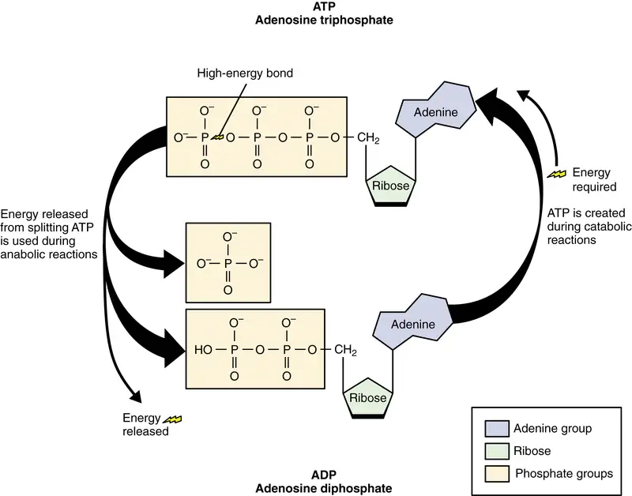
The energy from ATP drives all bodily functions, such as contracting muscles, maintaining the electrical potential of nerve cells, and absorbing food in the gastrointestinal tract. The metabolic reactions that produce ATP come from various sources (Figure 24.3).
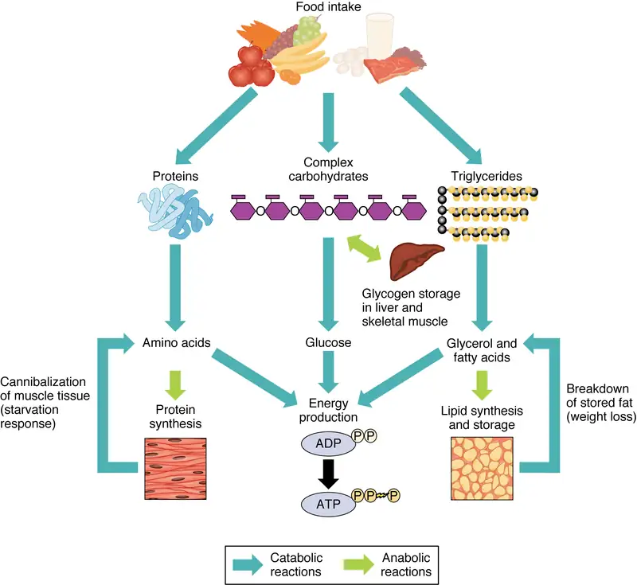
Of the four major macromolecular groups (carbohydrates, lipids, proteins, and nucleic acids) that are processed by digestion, carbohydrates are considered the most common source of energy to fuel the body. They take the form of either complex carbohydrates, polysaccharides like starch and glycogen, or simple sugars (monosaccharides) like glucose and fructose. Sugar catabolism breaks polysaccharides down into their individual monosaccharides. Among the monosaccharides, glucose is the most common fuel for ATP production in cells, and as such, there are a number of endocrine control mechanisms to regulate glucose concentration in the bloodstream. Excess glucose is either stored as an energy reserve in the liver and skeletal muscles as the complex polymer glycogen, or it is converted into fat (triglyceride) in adipose cells (adipocytes).
Among the lipids (fats), triglycerides are most often used for energy via a metabolic process called β-oxidation. About one-half of excess fat is stored in adipocytes that accumulate in the subcutaneous tissue under the skin, whereas the rest is stored in adipocytes in other tissues and organs.
Proteins, which are polymers, can be broken down into their monomers, individual amino acids. Amino acids can be used as building blocks of new proteins or broken down further for the production of ATP. When one is chronically starving, this use of amino acids for energy production can lead to a wasting away of the body, as more and more proteins are broken down.
Nucleic acids are present in most of the foods you eat. During digestion, nucleic acids including DNA and various RNAs are broken down into their constituent nucleotides. These nucleotides are readily absorbed and transported throughout the body to be used by individual cells during nucleic acid metabolism.
Anabolic Reactions¶
In contrast to catabolic reactions, anabolic reactions involve the joining of smaller molecules into larger ones. Anabolic reactions combine monosaccharides to form polysaccharides, fatty acids to form triglycerides, amino acids to form proteins, and nucleotides to form nucleic acids. These processes require energy in the form of ATP molecules generated by catabolic reactions. Anabolic reactions, also called biosynthesis reactions, create new molecules that form new cells and tissues, and revitalize organs.
Hormonal Regulation of Metabolism¶
Catabolic and anabolic hormones in the body help regulate metabolic processes. Catabolic hormones stimulate the breakdown of molecules and the production of energy. These include cortisol, glucagon, adrenaline/epinephrine, and cytokines. All of these hormones are mobilized at specific times to meet the needs of the body. Anabolic hormones are required for the synthesis of molecules and include growth hormone, insulin-like growth factor, insulin, testosterone, and estrogen. Table 24.1 summarizes the function of each of the catabolic hormones and Table 24.2 summarizes the functions of the anabolic hormones.
Table 24.1
| Catabolic Hormones | |
|---|---|
| Hormone | Function |
| Cortisol | Released from the adrenal gland in response to stress; its main role is to increase blood glucose levels by gluconeogenesis (breaking down fats and proteins) |
| Glucagon | Released from alpha cells in the pancreas either when starving or when the body needs to generate additional energy; it stimulates the breakdown of glycogen in the liver to increase blood glucose levels; its effect is the opposite of insulin; glucagon and insulin are a part of a negative-feedback system that stabilizes blood glucose levels |
| Adrenaline/epinephrine | Released in response to the activation of the sympathetic nervous system; increases heart rate and heart contractility, constricts blood vessels, is a bronchodilator that opens (dilates) the bronchi of the lungs to increase air volume in the lungs, and stimulates gluconeogenesis |
Table 24.2
| Anabolic Hormones | |
|---|---|
| Hormone | Function |
| Growth hormone (GH) | Synthesized and released from the pituitary gland; stimulates the growth of cells, tissues, and bones |
| Insulin-like growth factor (IGF) | Stimulates the growth of muscle and bone while also inhibiting cell death (apoptosis) |
| Insulin | Produced by the beta cells of the pancreas; plays an essential role in carbohydrate and fat metabolism, controls blood glucose levels, and promotes the uptake of glucose into body cells; causes cells in muscle, adipose tissue, and liver to take up glucose from the blood and store it in the liver and muscle as glycogen; its effect is the opposite of glucagon; glucagon and insulin are a part of a negative-feedback system that stabilizes blood glucose levels |
| Testosterone | Produced by the testes in males and the ovaries in females; stimulates an increase in muscle mass and strength as well as the growth and strengthening of bone |
| Estrogen | Produced primarily by the ovaries, it is also produced by the liver and adrenal glands; its anabolic functions include increasing metabolism and fat deposition |
Disorders of the Metabolic Processes: Cushing Syndrome and Addison’s Disease
As might be expected for a fundamental physiological process like metabolism, errors or malfunctions in metabolic processing lead to a pathophysiology or—if uncorrected—a disease state. Metabolic diseases are most commonly the result of malfunctioning proteins or enzymes that are critical to one or more metabolic pathways. Protein or enzyme malfunction can be the consequence of a genetic alteration or mutation. However, normally functioning proteins and enzymes can also have deleterious effects if their availability is not appropriately matched with metabolic need. For example, excessive production of the hormone cortisol (see Table 24.1) gives rise to Cushing syndrome. Clinically, Cushing syndrome is characterized by rapid weight gain, especially in the trunk and face region, depression, and anxiety. It is worth mentioning that tumors of the pituitary that produce adrenocorticotropic hormone (ACTH), which subsequently stimulates the adrenal cortex to release excessive cortisol, produce similar effects. This indirect mechanism of cortisol overproduction is referred to as Cushing disease.
Patients with Cushing syndrome can exhibit high blood glucose levels and are at an increased risk of becoming obese. They also show slow growth, accumulation of fat between the shoulders, weak muscles, bone pain (because cortisol causes proteins to be broken down to make glucose via gluconeogenesis), and fatigue. Other symptoms include excessive sweating (hyperhidrosis), capillary dilation, and thinning of the skin, which can lead to easy bruising. The treatments for Cushing syndrome are all focused on reducing excessive cortisol levels. Depending on the cause of the excess, treatment may be as simple as discontinuing the use of cortisol ointments. In cases of tumors, surgery is often used to remove the offending tumor. Where surgery is inappropriate, radiation therapy can be used to reduce the size of a tumor or ablate portions of the adrenal cortex. Finally, medications are available that can help to regulate the amounts of cortisol.
Insufficient cortisol production is equally problematic. Adrenal insufficiency, or Addison’s disease, is characterized by the reduced production of cortisol from the adrenal gland. It can result from malfunction of the adrenal glands—they do not produce enough cortisol—or it can be a consequence of decreased ACTH availability from the pituitary. Patients with Addison’s disease may have low blood pressure, paleness, extreme weakness, fatigue, slow or sluggish movements, lightheadedness, and salt cravings due to the loss of sodium and high blood potassium levels (hyperkalemia). Victims also may suffer from loss of appetite, chronic diarrhea, vomiting, mouth lesions, and patchy skin color. Diagnosis typically involves blood tests and imaging tests of the adrenal and pituitary glands. Treatment involves cortisol replacement therapy, which usually must be continued for life.
Oxidation-Reduction Reactions¶
The chemical reactions underlying metabolism involve the transfer of electrons from one compound to another by processes catalyzed by enzymes. The electrons in these reactions commonly come from hydrogen atoms, which consist of an electron and a proton. A molecule gives up a hydrogen atom, in the form of a hydrogen ion (H+) and an electron, breaking the molecule into smaller parts. The loss of an electron, or oxidation, releases a small amount of energy; both the electron and the energy are then passed to another molecule in the process of reduction, or the gaining of an electron. These two reactions always happen together in an oxidation-reduction reaction (also called a redox reaction)—when an electron is passed between molecules, the donor is oxidized and the recipient is reduced. Oxidation-reduction reactions often happen in a series, so that a molecule that is reduced is subsequently oxidized, passing on not only the electron it just received but also the energy it received. As the series of reactions progresses, energy accumulates that is used to combine Pi and ADP to form ATP, the high-energy molecule that the body uses for fuel.
Oxidation-reduction reactions are catalyzed by enzymes that trigger the removal of hydrogen atoms. Coenzymes work with enzymes and accept hydrogen atoms. The two most common coenzymes of oxidation-reduction reactions are nicotinamide adenine dinucleotide (NAD) and flavin adenine dinucleotide (FAD). Their respective reduced coenzymes are NADH and FADH2, which are energy-containing molecules used to transfer energy during the creation of ATP.
24.2 Carbohydrate Metabolism¶
Learning Objectives
By the end of this section, you will be able to:
- Explain the processes of glycolysis
- Describe the pathway of a pyruvate molecule through the Krebs cycle
- Explain the transport of electrons through the electron transport chain
- Describe the process of ATP production through oxidative phosphorylation
- Summarize the process of gluconeogenesis
Carbohydrates are organic molecules composed of carbon, hydrogen, and oxygen atoms. The family of carbohydrates includes both simple and complex sugars. Glucose and fructose are examples of simple sugars, and starch, glycogen, and cellulose are all examples of complex sugars. The complex sugars are also called polysaccharides and are made of multiple monosaccharide molecules. Polysaccharides serve as energy storage (e.g., starch and glycogen) and as structural components (e.g., chitin in insects and cellulose in plants).
During digestion, carbohydrates are broken down into simple, soluble sugars that can be transported across the intestinal wall into the circulatory system to be transported throughout the body. Carbohydrate digestion begins in the mouth with the action of salivary amylase on starches and ends with monosaccharides being absorbed across the epithelium of the small intestine. Once the absorbed monosaccharides are transported to the tissues, the process of cellular respiration begins (Figure 24.4). This section will focus first on glycolysis, a process where the monosaccharide glucose is oxidized, releasing the energy stored in its bonds to produce ATP.
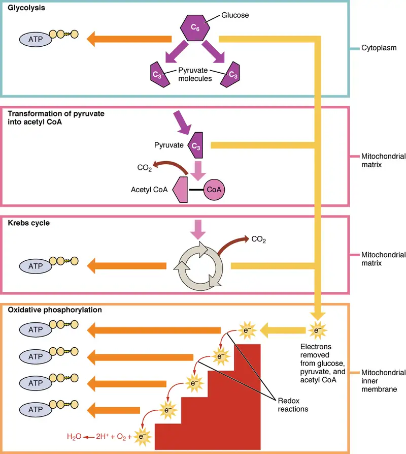
Glycolysis¶
Glucose is the body’s most readily available source of energy. After digestive processes break polysaccharides down into monosaccharides, including glucose, the monosaccharides are transported across the wall of the small intestine and into the circulatory system, which transports them to the liver. In the liver, hepatocytes either pass the glucose on through the circulatory system or store excess glucose as glycogen. Cells in the body take up the circulating glucose in response to insulin and, through a series of reactions called glycolysis, transfer some of the energy in glucose to ADP to form ATP (Figure 24.5). The last step in glycolysis produces the product pyruvate.
Glycolysis begins with the phosphorylation of glucose by hexokinase to form glucose-6-phosphate. This step uses one ATP, which is the donor of the phosphate group. Under the action of phosphofructokinase, glucose-6-phosphate is converted into fructose-6-phosphate. At this point, a second ATP donates its phosphate group, forming fructose-1,6-bisphosphate. This six-carbon sugar is split to form two phosphorylated three-carbon molecules, glyceraldehyde-3-phosphate and dihydroxyacetone phosphate, which are both converted into glyceraldehyde-3-phosphate. The glyceraldehyde-3-phosphate is further phosphorylated with groups donated by dihydrogen phosphate present in the cell to form the three-carbon molecule 1,3-bisphosphoglycerate. The energy of this reaction comes from the oxidation of (removal of electrons from) glyceraldehyde-3-phosphate. In a series of reactions leading to pyruvate, the two phosphate groups are then transferred to two ADPs to form two ATPs. Thus, glycolysis uses two ATPs but generates four ATPs, yielding a net gain of two ATPs and two molecules of pyruvate. In the presence of oxygen, pyruvate continues on to the Krebs cycle (also called the citric acid cycle or tricarboxylic acid cycle (TCA), where additional energy is extracted and passed on.
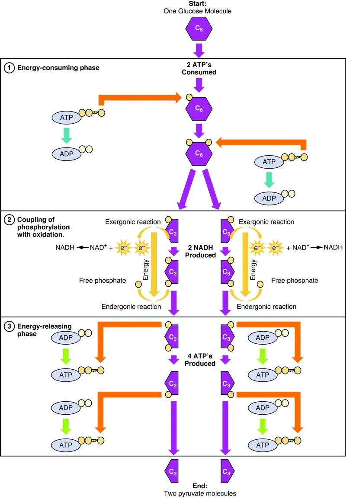
Interactive
Watch this video to learn about glycolysis.
Glycolysis can be divided into two phases: energy consuming (also called chemical priming) and energy yielding. The first phase is the energy-consuming phase, so it requires two ATP molecules to start the reaction for each molecule of glucose. However, the end of the reaction produces four ATPs, resulting in a net gain of two ATP energy molecules.
Glycolysis can be expressed as the following equation:
This equation states that glucose, in combination with ATP (the energy source), NAD+ (a coenzyme that serves as an electron acceptor), and inorganic phosphate, breaks down into two pyruvate molecules, generating four ATP molecules—for a net yield of two ATP—and two energy-containing NADH coenzymes. The NADH that is produced in this process will be used later to produce ATP in the mitochondria. Importantly, by the end of this process, one glucose molecule generates two pyruvate molecules, two high-energy ATP molecules, and two electron-carrying NADH molecules.
The following discussions of glycolysis include the enzymes responsible for the reactions. When glucose enters a cell, the enzyme hexokinase (or glucokinase, in the liver) rapidly adds a phosphate to convert it into glucose-6-phosphate. A kinase is a type of enzyme that adds a phosphate molecule to a substrate (in this case, glucose, but it can be true of other molecules also). This conversion step requires one ATP and essentially traps the glucose in the cell, preventing it from passing back through the plasma membrane, thus allowing glycolysis to proceed. It also functions to maintain a concentration gradient with higher glucose levels in the blood than in the tissues. By establishing this concentration gradient, the glucose in the blood will be able to flow from an area of high concentration (the blood) into an area of low concentration (the tissues) to be either used or stored. Hexokinase is found in nearly every tissue in the body. Glucokinase, on the other hand, is expressed in tissues that are active when blood glucose levels are high, such as the liver. Hexokinase has a higher affinity for glucose than glucokinase and therefore is able to convert glucose at a faster rate than glucokinase. This is important when levels of glucose are very low in the body, as it allows glucose to travel preferentially to those tissues that require it more.
In the next step of the first phase of glycolysis, the enzyme glucose-6-phosphate isomerase converts glucose-6-phosphate into fructose-6-phosphate. Like glucose, fructose is also a six carbon-containing sugar. The enzyme phosphofructokinase-1 then adds one more phosphate to convert fructose-6-phosphate into fructose-1-6-bisphosphate, another six-carbon sugar, using another ATP molecule. Aldolase then breaks down this fructose-1-6-bisphosphate into two three-carbon molecules, glyceraldehyde-3-phosphate and dihydroxyacetone phosphate. The triosephosphate isomerase enzyme then converts dihydroxyacetone phosphate into a second glyceraldehyde-3-phosphate molecule. Therefore, by the end of this chemical-priming or energy-consuming phase, one glucose molecule is broken down into two glyceraldehyde-3-phosphate molecules.
The second phase of glycolysis, the energy-yielding phase, creates the energy that is the product of glycolysis. Glyceraldehyde-3-phosphate dehydrogenase converts each three-carbon glyceraldehyde-3-phosphate produced during the energy-consuming phase into 1,3-bisphosphoglycerate. This reaction releases an electron that is then picked up by NAD+ to create an NADH molecule. NADH is a high-energy molecule, like ATP, but unlike ATP, it is not used as energy currency by the cell. Because there are two glyceraldehyde-3-phosphate molecules, two NADH molecules are synthesized during this step. Each 1,3-bisphosphoglycerate is subsequently dephosphorylated (i.e., a phosphate is removed) by phosphoglycerate kinase into 3-phosphoglycerate. Each phosphate released in this reaction can convert one molecule of ADP into one high-energy ATP molecule, resulting in a gain of two ATP molecules.
The enzyme phosphoglycerate mutase then converts the 3-phosphoglycerate molecules into 2-phosphoglycerate. The enolase enzyme then acts upon the 2-phosphoglycerate molecules to convert them into phosphoenolpyruvate molecules. The last step of glycolysis involves the dephosphorylation of the two phosphoenolpyruvate molecules by pyruvate kinase to create two pyruvate molecules and two ATP molecules.
In summary, one glucose molecule breaks down into two pyruvate molecules, and creates two net ATP molecules and two NADH molecules by glycolysis. Therefore, glycolysis generates energy for the cell and creates pyruvate molecules that can be processed further through the aerobic Krebs cycle (also called the citric acid cycle or tricarboxylic acid cycle); converted into lactic acid or alcohol (in yeast) by fermentation; or used later for the synthesis of glucose through gluconeogenesis.
Anaerobic Respiration¶
When oxygen is limited or absent, pyruvate enters an anaerobic pathway called fermentation. In these reactions, pyruvate can be converted into lactic acid. This pathway serves to keep the pyruvate concentration low so glycolysis continues, and it oxidizes NADH into the NAD+ needed by glycolysis. In this reaction, lactic acid replaces oxygen as the final electron acceptor. Fermentation occurs in most cells of the body when oxygen is limited or mitochondria are absent or nonfunctional. For example, because erythrocytes (red blood cells) lack mitochondria, they must produce their ATP from fermentation. This is an effective pathway of ATP production for short periods of time, ranging from seconds to a few minutes. The lactic acid produced diffuses into the plasma and is carried to the liver, where it is converted back into pyruvate or glucose via the Cori cycle. Similarly, when a person exercises, muscles use ATP faster than oxygen can be delivered to them. They depend on glycolysis and lactic acid production for rapid ATP production.
Aerobic Respiration¶
In the presence of oxygen, pyruvate can enter the Krebs cycle where additional energy is extracted as electrons are transferred from the pyruvate to the receptors NAD+, GDP, and FAD, with carbon dioxide being a “waste product” (Figure 24.6). The NADH and FADH2 pass electrons on to the electron transport chain, which uses the transferred energy to produce ATP. As the terminal step in the electron transport chain, oxygen is the terminal electron acceptor and creates water inside the mitochondria.
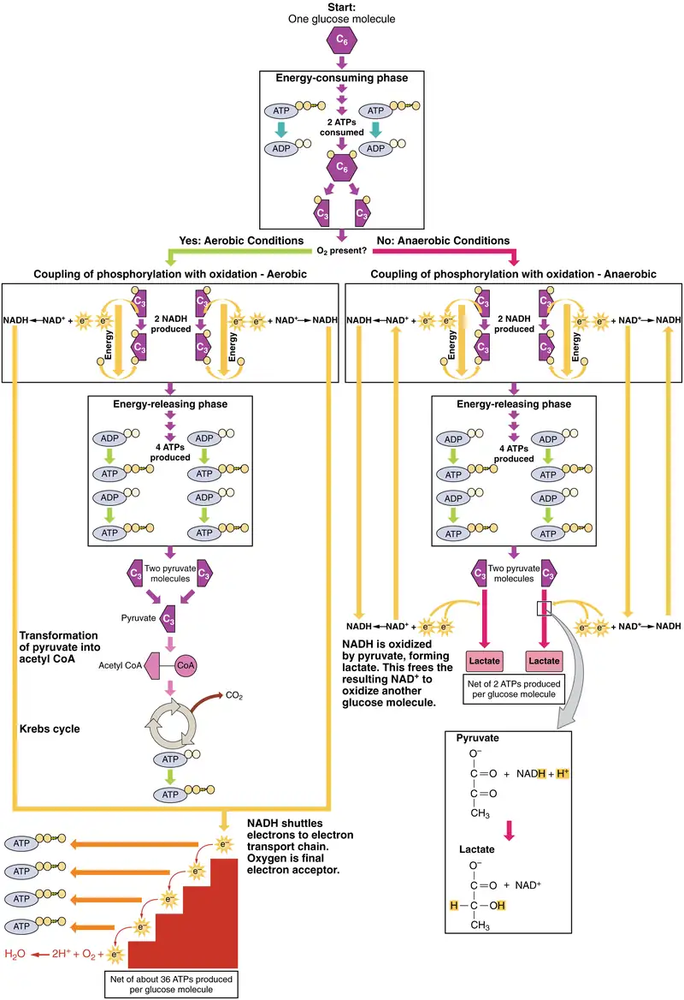
Krebs Cycle/Citric Acid Cycle/Tricarboxylic Acid Cycle¶
The pyruvate molecules generated during glycolysis are transported across the mitochondrial membrane into the inner mitochondrial matrix, where they are metabolized by enzymes in a pathway called the Krebs cycle (Figure 24.7). The Krebs cycle is also commonly called the citric acid cycle or the tricarboxylic acid (TCA) cycle. During the Krebs cycle, high-energy molecules, including ATP, NADH, and FADH2, are created. NADH and FADH2 then pass electrons through the electron transport chain in the mitochondria to generate more ATP molecules.
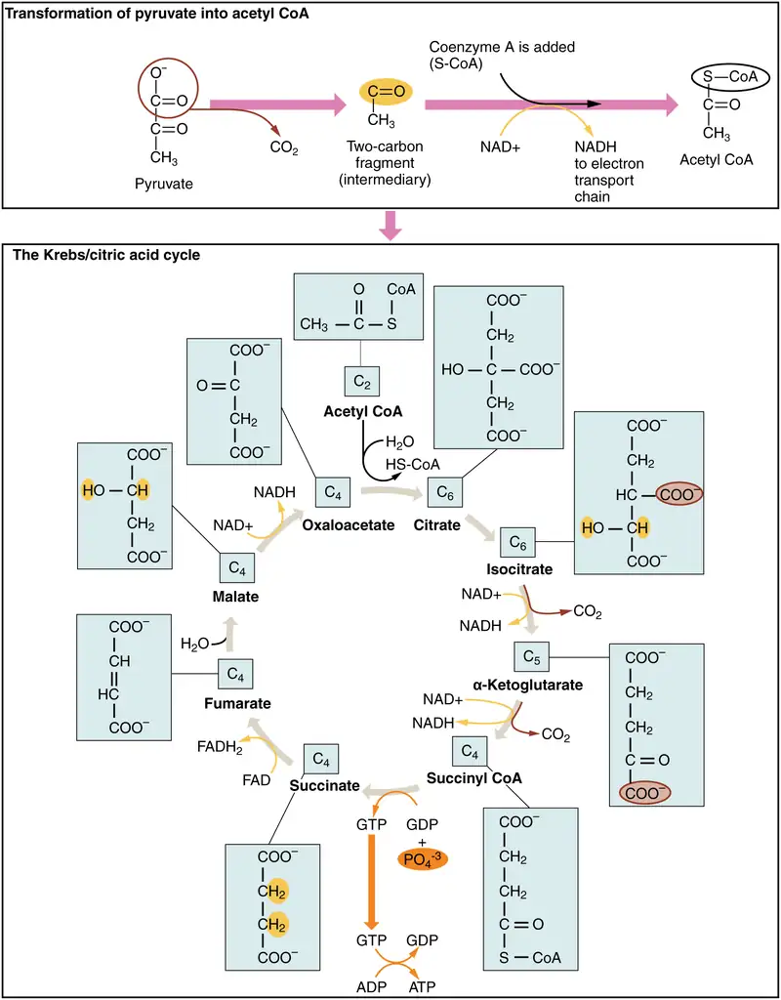
Interactive
Watch this animation to observe the Krebs cycle.
The three-carbon pyruvate molecule generated during glycolysis moves from the cytoplasm into the mitochondrial matrix, where it is converted by the enzyme pyruvate dehydrogenase into a two-carbon acetyl coenzyme A (acetyl CoA) molecule. This reaction is an oxidative decarboxylation reaction. It converts the three-carbon pyruvate into a two-carbon acetyl CoA molecule, releasing carbon dioxide and transferring two electrons that combine with NAD+ to form NADH. Acetyl CoA enters the Krebs cycle by combining with a four-carbon molecule, oxaloacetate, to form the six-carbon molecule citrate, or citric acid, at the same time releasing the coenzyme A molecule.
The six-carbon citrate molecule is systematically converted to a five-carbon molecule and then a four-carbon molecule, ending with oxaloacetate, the beginning of the cycle. Along the way, each citrate molecule will produce one ATP, one FADH2, and three NADH. The FADH2 and NADH will enter the oxidative phosphorylation system located in the inner mitochondrial membrane. In addition, the Krebs cycle supplies the starting materials to process and break down proteins and fats.
To start the Krebs cycle, citrate synthase combines acetyl CoA and oxaloacetate to form a six-carbon citrate molecule; CoA is subsequently released and can combine with another pyruvate molecule to begin the cycle again. The aconitase enzyme converts citrate into isocitrate. In two successive steps of oxidative decarboxylation, two molecules of CO2 and two NADH molecules are produced when isocitrate dehydrogenase converts isocitrate into the five-carbon α-ketoglutarate, which is then catalyzed and converted into the four-carbon succinyl CoA by α-ketoglutarate dehydrogenase. The enzyme succinyl CoA dehydrogenase then converts succinyl CoA into succinate and forms the high-energy molecule GTP, which transfers its energy to ADP to produce ATP. Succinate dehydrogenase then converts succinate into fumarate, forming a molecule of FADH2. Fumarase then converts fumarate into malate, which malate dehydrogenase then converts back into oxaloacetate while reducing NAD+ to NADH. Oxaloacetate is then ready to combine with the next acetyl CoA to start the Krebs cycle again (see Figure 24.7). For each turn of the cycle, three NADH, one ATP (through GTP), and one FADH2are created. Each carbon of pyruvate is converted into CO2, which is released as a byproduct of oxidative (aerobic) respiration.
Oxidative Phosphorylation and the Electron Transport Chain¶
The electron transport chain (ETC) uses the NADH and FADH2 produced by the Krebs cycle to generate ATP. Electrons from NADH and FADH2 are transferred through protein complexes embedded in the inner mitochondrial membrane by a series of enzymatic reactions. The electron transport chain consists of a series of four enzyme complexes (Complex I – Complex IV) and two coenzymes (ubiquinone and Cytochrome c), which act as electron carriers and proton pumps used to transfer H+ ions into the space between the inner and outer mitochondrial membranes (Figure 24.8). The ETC couples the transfer of electrons between a donor (like NADH) and an electron acceptor (like O2) with the transfer of protons (H+ ions) across the inner mitochondrial membrane, enabling the process of oxidative phosphorylation. In the presence of oxygen, energy is passed, stepwise, through the electron carriers to collect gradually the energy needed to attach a phosphate to ADP and produce ATP. The role of molecular oxygen, O2, is as the terminal electron acceptor for the ETC. This means that once the electrons have passed through the entire ETC, they must be passed to another, separate molecule. These electrons, O2, and H+ ions from the matrix combine to form new water molecules. This is the basis for your need to breathe in oxygen. Without oxygen, electron flow through the ETC ceases.
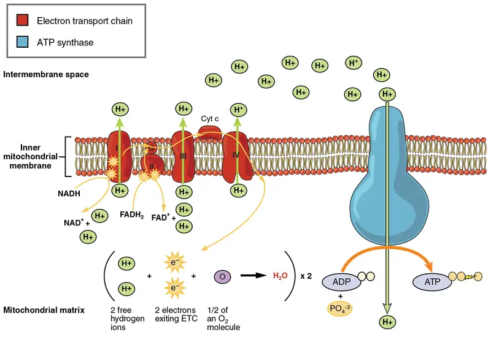
Interactive
Watch this video to learn about the electron transport chain.
The electrons released from NADH and FADH2 are passed along the chain by each of the carriers, which are reduced when they receive the electron and oxidized when passing it on to the next carrier. Each of these reactions releases a small amount of energy, which is used to pump H+ ions across the inner membrane. The accumulation of these protons in the space between the membranes creates a proton gradient with respect to the mitochondrial matrix.
Also embedded in the inner mitochondrial membrane is an amazing protein pore complex called ATP synthase. Effectively, it is a turbine that is powered by the flow of H+ions across the inner membrane down a gradient and into the mitochondrial matrix. As the H+ions traverse the complex, the shaft of the complex rotates. This rotation enables other portions of ATP synthase to encourage ADP and Pi to create ATP. In accounting for the total number of ATP produced per glucose molecule through aerobic respiration, it is important to remember the following points:
- A net of two ATP are produced through glycolysis (four produced and two consumed during the energy-consuming stage). However, these two ATP are used for transporting the NADH produced during glycolysis from the cytoplasm into the mitochondria. Therefore, the net production of ATP during glycolysis is zero.
- In all phases after glycolysis, the number of ATP, NADH, and FADH2 produced must be multiplied by two to reflect how each glucose molecule produces two pyruvate molecules.
- In the ETC, about three ATP are produced for every oxidized NADH. However, only about two ATP are produced for every oxidized FADH2. The electrons from FADH2 produce less ATP, because they start at a lower point in the ETC (Complex II) compared to the electrons from NADH (Complex I) (see Figure 24.8).
Therefore, for every glucose molecule that enters aerobic respiration, a net total of 36 ATPs are produced (Figure 24.9).
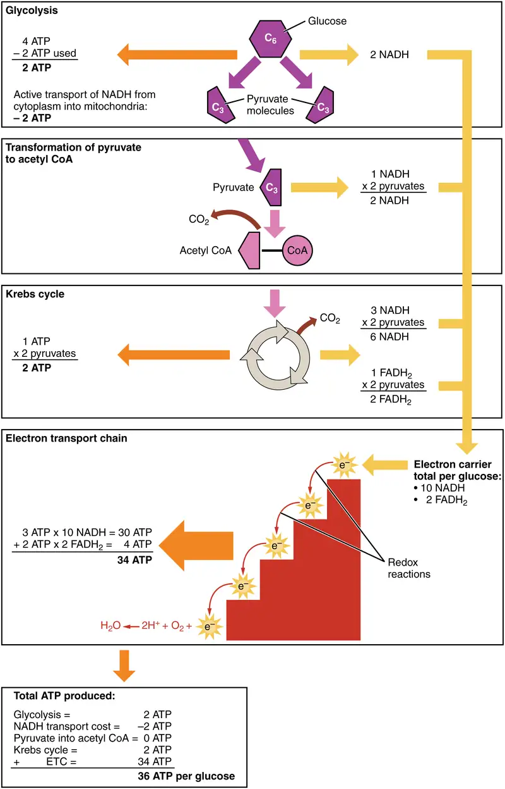
Gluconeogenesis¶
Gluconeogenesis is the synthesis of new glucose molecules from pyruvate, lactate, glycerol, or the amino acids alanine or glutamine. This process takes place primarily in the liver during periods of low glucose, that is, under conditions of fasting, starvation, and low carbohydrate diets. So, the question can be raised as to why the body would create something it has just spent a fair amount of effort to break down? Certain key organs, including the brain, can use only glucose as an energy source; therefore, it is essential that the body maintain a minimum blood glucose concentration. When the blood glucose concentration falls below that certain point, new glucose is synthesized by the liver to raise the blood concentration to normal.
Gluconeogenesis is not simply the reverse of glycolysis. There are some important differences (Figure 24.10). Pyruvate is a common starting material for gluconeogenesis. First, the pyruvate is converted into oxaloacetate. Oxaloacetate then serves as a substrate for the enzyme phosphoenolpyruvate carboxykinase (PEPCK), which transforms oxaloacetate into phosphoenolpyruvate (PEP). From this step, gluconeogenesis is nearly the reverse of glycolysis. PEP is converted back into 2-phosphoglycerate, which is converted into 3-phosphoglycerate. Then, 3-phosphoglycerate is converted into 1,3 bisphosphoglycerate and then into glyceraldehyde-3-phosphate. Two molecules of glyceraldehyde-3-phosphate then combine to form fructose-1-6-bisphosphate, which is converted into fructose 6-phosphate and then into glucose-6-phosphate. Finally, a series of reactions generates glucose itself. In gluconeogenesis (as compared to glycolysis), the enzyme hexokinase is replaced by glucose-6-phosphatase, and the enzyme phosphofructokinase-1 is replaced by fructose-1,6-bisphosphatase. This helps the cell to regulate glycolysis and gluconeogenesis independently of each other.
As will be discussed as part of lipolysis, fats can be broken down into glycerol, which can be phosphorylated to form dihydroxyacetone phosphate or DHAP. DHAP can either enter the glycolytic pathway or be used by the liver as a substrate for gluconeogenesis.
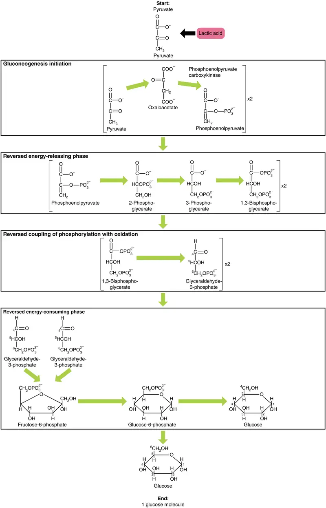
Aging and the Body’s Metabolic Rate
The human body’s metabolic rate decreases nearly 2 percent per decade after age 30. Changes in body composition, including reduced lean muscle mass, are mostly responsible for this decrease. The most dramatic loss of muscle mass, and consequential decline in metabolic rate, occurs between 50 and 70 years of age. Loss of muscle mass is the equivalent of reduced strength, which tends to inhibit seniors from engaging in sufficient physical activity. This results in a positive-feedback system where the reduced physical activity leads to even more muscle loss, further reducing metabolism.
There are several things that can be done to help prevent general declines in metabolism and to fight back against the cyclic nature of these declines. These include eating breakfast, eating small meals frequently, consuming plenty of lean protein, drinking water to remain hydrated, exercising (including strength training), and getting enough sleep. These measures can help keep energy levels from dropping and curb the urge for increased calorie consumption from excessive snacking. While these strategies are not guaranteed to maintain metabolism, they do help prevent muscle loss and may increase energy levels. Some experts also suggest avoiding sugar, which can lead to excess fat storage. Spicy foods and green tea might also be beneficial. Because stress activates cortisol release, and cortisol slows metabolism, avoiding stress, or at least practicing relaxation techniques, can also help.
24.3 Lipid Metabolism¶
Learning Objectives
By the end of this section, you will be able to:
- Explain how energy can be derived from fat
- Explain the purpose and process of ketogenesis
- Describe the process of ketone body oxidation
- Explain the purpose and the process of lipogenesis
Fats (or triglycerides) within the body are ingested as food or synthesized by adipocytes or hepatocytes from carbohydrate precursors (Figure 24.11). Lipid metabolism entails the oxidation of fatty acids to either generate energy or synthesize new lipids from smaller constituent molecules. Lipid metabolism is associated with carbohydrate metabolism, as products of glucose (such as acetyl CoA) can be converted into lipids.
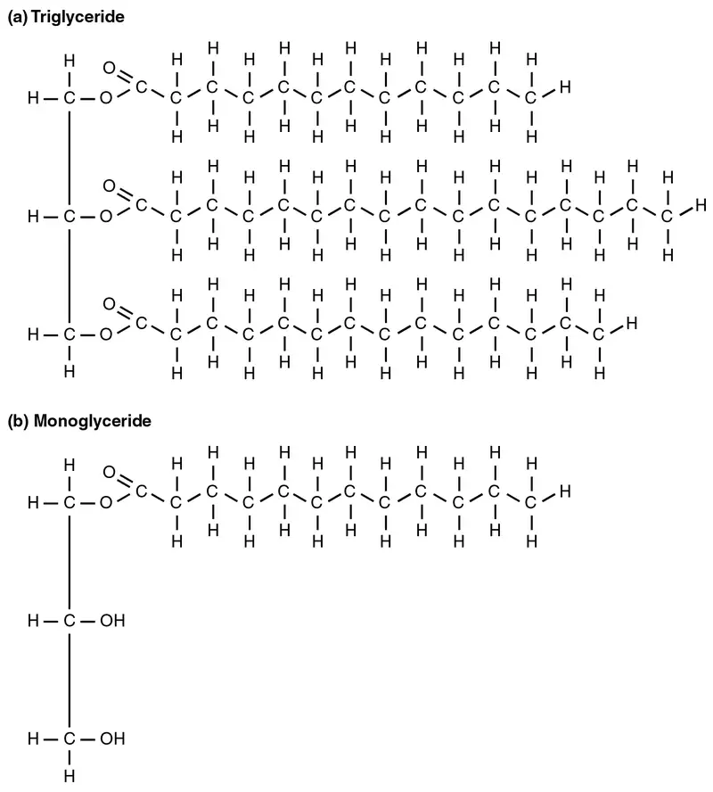
Lipid metabolism begins in the intestine where ingested triglycerides are broken down into smaller chain fatty acids and subsequently into monoglyceride molecules (see Figure 24.11b) by pancreatic lipases, enzymes that break down fats after they are emulsified by bile salts. When food reaches the small intestine in the form of chyme, a digestive hormone called cholecystokinin (CCK) is released by intestinal cells in the intestinal mucosa. CCK stimulates the release of pancreatic lipase from the pancreas and stimulates the contraction of the gallbladder to release stored bile salts into the intestine. CCK also travels to the brain, where it can act as a hunger suppressant.
Together, the pancreatic lipases and bile salts break down triglycerides into free fatty acids. These fatty acids can be transported across the intestinal membrane. However, once they cross the membrane, they are recombined to again form triglyceride molecules. Within the intestinal cells, these triglycerides are packaged along with cholesterol molecules in phospholipid vesicles called chylomicrons (Figure 24.12). The chylomicrons enable fats and cholesterol to move within the aqueous environment of your lymphatic and circulatory systems. Chylomicrons leave the enterocytes by exocytosis and enter the lymphatic system via lacteals in the villi of the intestine. From the lymphatic system, the chylomicrons are transported to the circulatory system. Once in the circulation, they can either go to the liver or be stored in fat cells (adipocytes) that comprise adipose (fat) tissue found throughout the body.
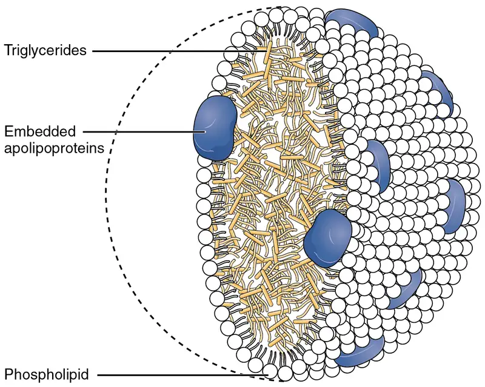
Lipolysis¶
To obtain energy from fat, triglycerides must first be broken down by hydrolysis into their two principal components, fatty acids and glycerol. This process, called lipolysis, takes place in the cytoplasm. The resulting fatty acids are oxidized by β-oxidation into acetyl CoA, which is used by the Krebs cycle. The glycerol that is released from triglycerides after lipolysis directly enters the glycolysis pathway as DHAP. Because one triglyceride molecule yields three fatty acid molecules with as much as 16 or more carbons in each one, fat molecules yield more energy than carbohydrates and are an important source of energy for the human body. Triglycerides yield more than twice the energy per unit mass when compared to carbohydrates and proteins. Therefore, when glucose levels are low, triglycerides can be converted into acetyl CoA molecules and used to generate ATP through aerobic respiration.
The breakdown of fatty acids, called fatty acid oxidation or beta (β)-oxidation, begins in the cytoplasm, where fatty acids are converted into fatty acyl CoA molecules. This fatty acyl CoA combines with carnitine to create a fatty acyl carnitine molecule, which helps to transport the fatty acid across the mitochondrial membrane. Once inside the mitochondrial matrix, the fatty acyl carnitine molecule is converted back into fatty acyl CoA and then into acetyl CoA (Figure 24.13). The newly formed acetyl CoA enters the Krebs cycle and is used to produce ATP in the same way as acetyl CoA derived from pyruvate.
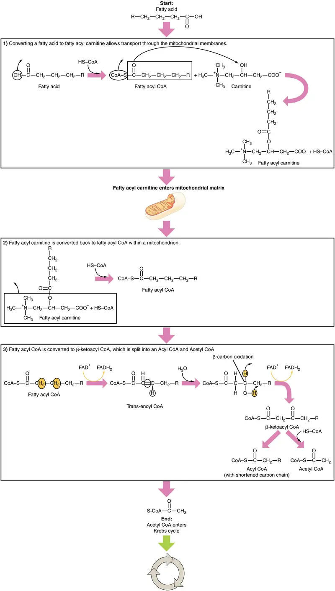
Ketogenesis¶
If excessive acetyl CoA is created from the oxidation of fatty acids and the Krebs cycle is overloaded and cannot handle it, the acetyl CoA is diverted to create ketone bodies. These ketone bodies can serve as a fuel source if glucose levels are too low in the body. Ketones serve as fuel in times of prolonged starvation or when patients suffer from uncontrolled diabetes and cannot utilize most of the circulating glucose. In both cases, fat stores are liberated to generate energy through the Krebs cycle and will generate ketone bodies when too much acetyl CoA accumulates.
In this ketone synthesis reaction, excess acetyl CoA is converted into hydroxymethylglutaryl CoA (HMG CoA). HMG CoA is a precursor of cholesterol and is an intermediate that is subsequently converted into β-hydroxybutyrate, the primary ketone body in the blood (Figure 24.14).
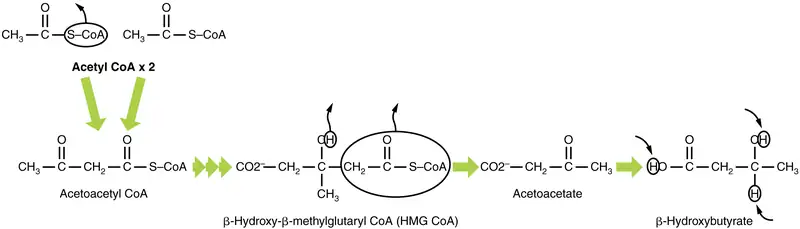
Ketone Body Oxidation¶
Organs that have classically been thought to be dependent solely on glucose, such as the brain, can actually use ketones as an alternative energy source. This keeps the brain functioning when glucose is limited. When ketones are produced faster than they can be used, they can be broken down into CO2 and acetone. The acetone is removed by exhalation. One symptom of ketogenesis is that the patient’s breath smells sweet like alcohol. This effect provides one way of telling if a person with diabetes is properly controlling the disease. The carbon dioxide produced can acidify the blood, leading to diabetic ketoacidosis, a dangerous condition in people with diabetes.
Ketones oxidize to produce energy for the brain. beta (β)-hydroxybutyrate is oxidized to acetoacetate and NADH is released. An HS-CoA molecule is added to acetoacetate, forming acetoacetyl CoA. The carbon within the acetoacetyl CoA that is not bonded to the CoA then detaches, splitting the molecule in two. This carbon then attaches to another free HS-CoA, resulting in two acetyl CoA molecules. These two acetyl CoA molecules are then processed through the Krebs cycle to generate energy (Figure 24.15).
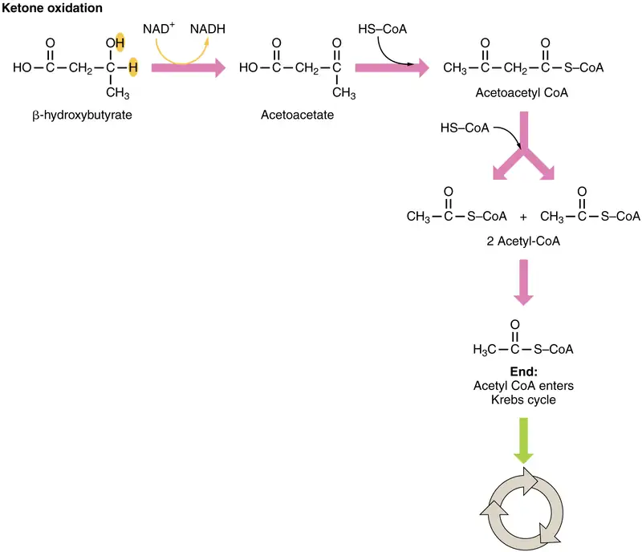
Lipogenesis¶
When glucose levels are plentiful, the excess acetyl CoA generated by glycolysis can be converted into fatty acids, triglycerides, cholesterol, steroids, and bile salts. This process, called lipogenesis, creates lipids (fat) from the acetyl CoA and takes place in the cytoplasm of adipocytes (fat cells) and hepatocytes (liver cells). When you eat more glucose or carbohydrates than your body needs, your system uses acetyl CoA to turn the excess into fat. Although there are several metabolic sources of acetyl CoA, it is most commonly derived from glycolysis. Acetyl CoA availability is significant, because it initiates lipogenesis. Lipogenesis begins with acetyl CoA and advances by the subsequent addition of two carbon atoms from another acetyl CoA; this process is repeated until fatty acids are the appropriate length. Because this is a bond-creating anabolic process, ATP is consumed. However, the creation of triglycerides and lipids is an efficient way of storing the energy available in carbohydrates. Triglycerides and lipids, high-energy molecules, are stored in adipose tissue until they are needed.
Although lipogenesis occurs in the cytoplasm, the necessary acetyl CoA is created in the mitochondria and cannot be transported across the mitochondrial membrane. To solve this problem, pyruvate is converted into both oxaloacetate and acetyl CoA. Two different enzymes are required for these conversions. Oxaloacetate forms via the action of pyruvate carboxylase, whereas the action of pyruvate dehydrogenase creates acetyl CoA. Oxaloacetate and acetyl CoA combine to form citrate, which can cross the mitochondrial membrane and enter the cytoplasm. In the cytoplasm, citrate is converted back into oxaloacetate and acetyl CoA. Oxaloacetate is converted into malate and then into pyruvate. Pyruvate crosses back across the mitochondrial membrane to wait for the next cycle of lipogenesis. The acetyl CoA is converted into malonyl CoA that is used to synthesize fatty acids. Figure 24.16 summarizes the pathways of lipid metabolism.
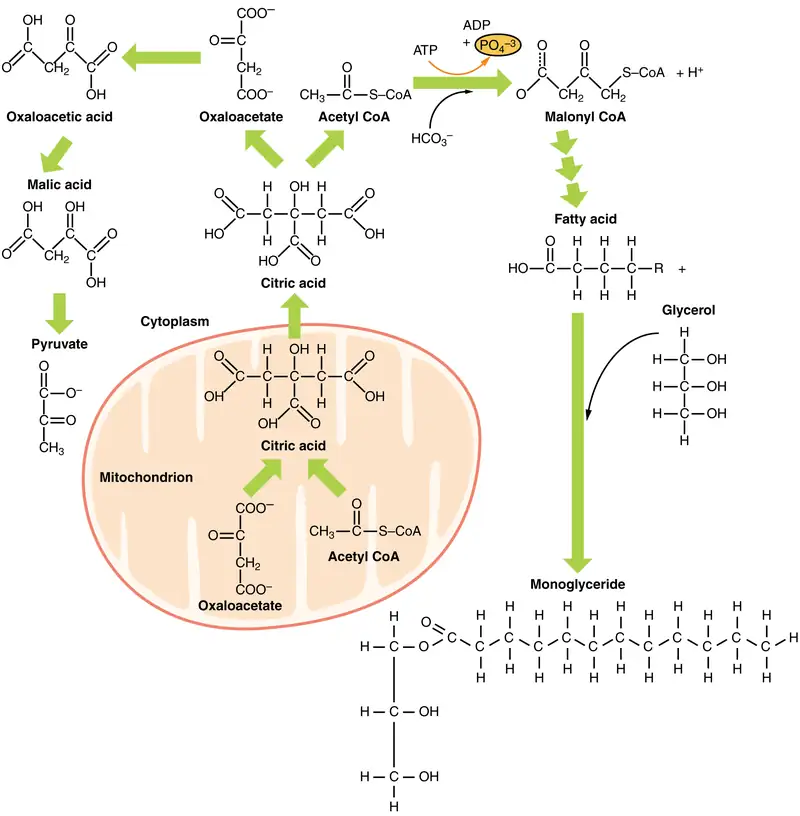
24.4 Protein Metabolism¶
Learning Objectives
By the end of this section, you will be able to:
- Describe how the body digests proteins
- Explain how the urea cycle prevents toxic concentrations of nitrogen
- Differentiate between glucogenic and ketogenic amino acids
- Explain how protein can be used for energy
Much of the body is made of protein, and these proteins take on a myriad of forms. They represent cell signaling receptors, signaling molecules, structural members, enzymes, intracellular trafficking components, extracellular matrix scaffolds, ion pumps, ion channels, oxygen and CO2 transporters (hemoglobin). That is not even the complete list! There is protein in bones (collagen), muscles, and tendons; the hemoglobin that transports oxygen; and enzymes that catalyze all biochemical reactions. Protein is also used for growth and repair. Amid all these necessary functions, proteins also hold the potential to serve as a metabolic fuel source. Proteins are not stored for later use, so excess proteins must be converted into glucose or triglycerides, and used to supply energy or build energy reserves. Although the body can synthesize proteins from amino acids, food is an important source of those amino acids, especially because humans cannot synthesize all of the 20 amino acids used to build proteins.
The digestion of proteins begins in the stomach. When protein-rich foods enter the stomach, they are greeted by a mixture of the enzyme pepsin and hydrochloric acid (HCl; 0.5 percent). The latter produces an environmental pH of 1.5–3.5 that denatures proteins within food. Pepsin cuts proteins into smaller polypeptides and their constituent amino acids. When the food-gastric juice mixture (chyme) enters the small intestine, the pancreas releases sodium bicarbonate to neutralize the HCl. This helps to protect the lining of the intestine. The small intestine also releases digestive hormones, including secretin and CCK, which stimulate digestive processes to break down the proteins further. Secretin also stimulates the pancreas to release sodium bicarbonate. The pancreas releases most of the digestive enzymes, including the proteases trypsin, chymotrypsin, and elastase, which aid protein digestion. Together, all of these enzymes break complex proteins into smaller individual amino acids (Figure 24.17), which are then transported across the intestinal mucosa to be used to create new proteins, or to be converted into fats or acetyl CoA and used in the Krebs cycle.
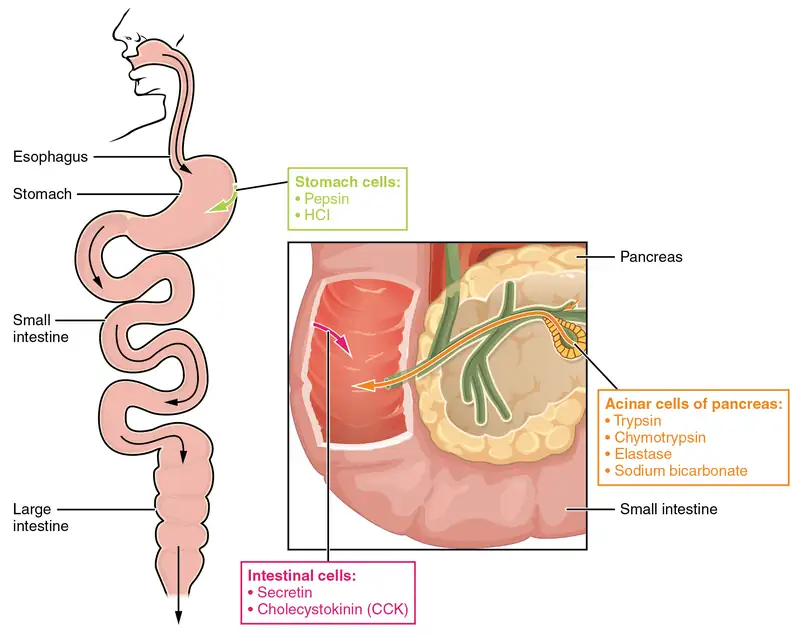
In order to avoid breaking down the proteins that make up the pancreas and small intestine, pancreatic enzymes are released as inactive proenzymes that are only activated in the small intestine. In the pancreas, vesicles store trypsin and chymotrypsin as trypsinogen and chymotrypsinogen. Once released into the small intestine, an enzyme found in the wall of the small intestine, called enterokinase, binds to trypsinogen and converts it into its active form, trypsin. Trypsin then binds to chymotrypsinogen to convert it into the active chymotrypsin. Trypsin and chymotrypsin break down large proteins into smaller peptides, a process called proteolysis. These smaller peptides are catabolized into their constituent amino acids, which are transported across the apical surface of the intestinal mucosa in a process that is mediated by sodium-amino acid transporters. These transporters bind sodium and then bind the amino acid to transport it across the membrane. At the basal surface of the mucosal cells, the sodium and amino acid are released. The sodium can be reused in the transporter, whereas the amino acids are transferred into the bloodstream to be transported to the liver and cells throughout the body for protein synthesis.
Freely available amino acids are used to create proteins. If amino acids exist in excess, the body has no capacity or mechanism for their storage; thus, they are converted into glucose or ketones, or they are decomposed. Amino acid decomposition results in hydrocarbons and nitrogenous waste. However, high concentrations of nitrogenous byproducts are toxic. The urea cycle processes nitrogen and facilitates its excretion from the body.
Urea Cycle¶
The urea cycle is a set of biochemical reactions that produces urea from ammonium ions in order to prevent a toxic level of ammonium in the body. It occurs primarily in the liver and, to a lesser extent, in the kidney. Prior to the urea cycle, ammonium ions are produced from the breakdown of amino acids. In these reactions, an amine group, or ammonium ion, from the amino acid is exchanged with a keto group on another molecule. This transamination event creates a molecule that is necessary for the Krebs cycle and an ammonium ion that enters into the urea cycle to be eliminated.
In the urea cycle, ammonium is combined with CO2, resulting in urea and water. The urea is eliminated through the kidneys in the urine (Figure 24.18).
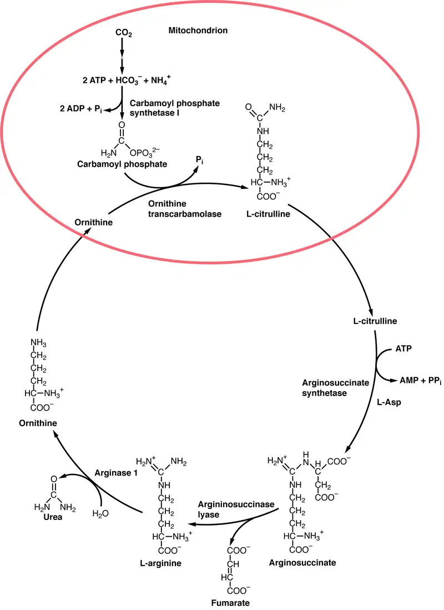
Amino acids can also be used as a source of energy, especially in times of starvation. Because the processing of amino acids results in the creation of metabolic intermediates, including pyruvate, acetyl CoA, acetoacyl CoA, oxaloacetate, and α-ketoglutarate, amino acids can serve as a source of energy production through the Krebs cycle (Figure 24.19). Figure 24.20 summarizes the pathways of catabolism and anabolism for carbohydrates, lipids, and proteins.
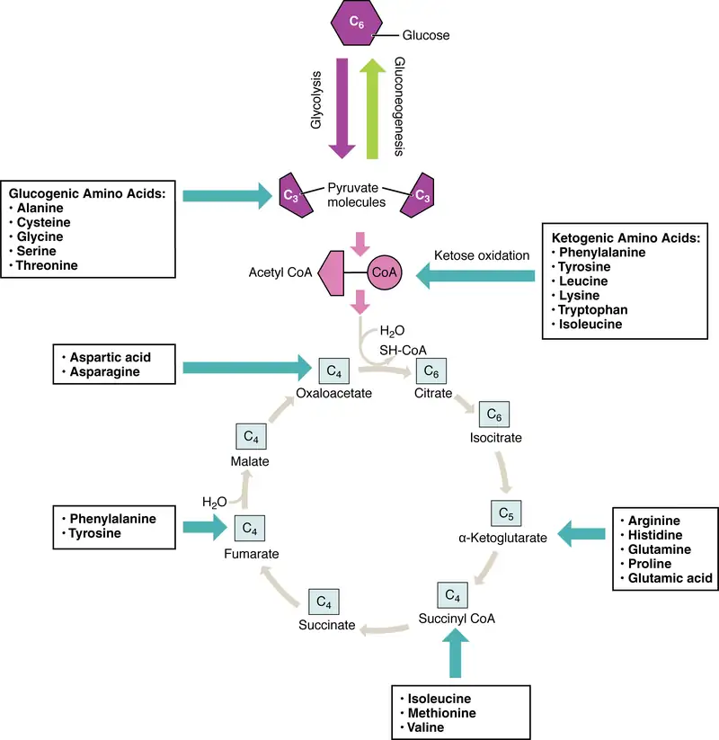
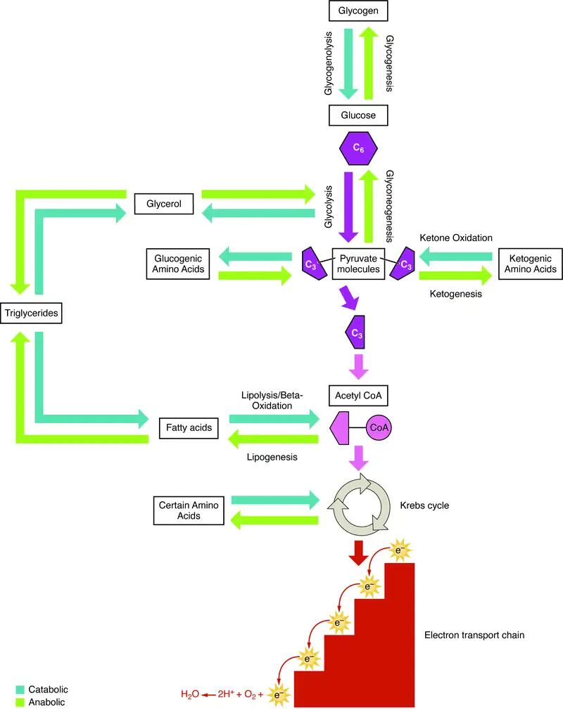
Disorders of the Metabolism: Pyruvate Dehydrogenase Complex Deficiency and Phenylketonuria
Pyruvate dehydrogenase complex deficiency (PDCD) and phenylketonuria (PKU) are genetic disorders. Pyruvate dehydrogenase is the enzyme that converts pyruvate into acetyl CoA, the molecule necessary to begin the Krebs cycle to produce ATP. With low levels of the pyruvate dehydrogenase complex (PDC), the rate of cycling through the Krebs cycle is dramatically reduced. This results in a decrease in the total amount of energy that is produced by the cells of the body. PDC deficiency results in a neurodegenerative disease that ranges in severity, depending on the levels of the PDC enzyme. It may cause developmental defects, muscle spasms, and death. Treatments can include diet modification, vitamin supplementation, and gene therapy; however, damage to the central nervous system usually cannot be reversed.
PKU affects about 1 in every 15,000 births in the United States. People afflicted with PKU lack sufficient activity of the enzyme phenylalanine hydroxylase and are therefore unable to break down phenylalanine into tyrosine adequately. Because of this, levels of phenylalanine rise to toxic levels in the body, which results in damage to the central nervous system and brain. Symptoms include delayed neurological development, hyperactivity, intellectual disability, seizures, rash, tremors, and uncontrolled movements of the arms and legs. Pregnant people with PKU are at a high risk for exposing the fetus to too much phenylalanine, which can cross the placenta and affect fetal development. Babies exposed to excess phenylalanine in utero may present with heart defects, physical and/or intellectual disability, and microcephaly. Every infant in the United States and Canada is tested at birth to determine whether PKU is present. The earlier a modified diet is begun, the less severe the symptoms will be. The person must closely follow a strict diet that is low in phenylalanine to avoid symptoms and damage. Phenylalanine is found in high concentrations in artificial sweeteners, including aspartame. Therefore, these sweeteners must be avoided. Some animal products and certain starches are also high in phenylalanine, and intake of these foods should be carefully monitored.
24.5 Metabolic States of the Body¶
Learning Objectives
By the end of this section, you will be able to:
- Describe what defines each of the three metabolic states
- Describe the processes that occur during the absorptive state of metabolism
- Describe the processes that occur during the postabsorptive state of metabolism
- Explain how the body processes glucose when the body is starved of fuel
You eat periodically throughout the day; however, your organs, especially the brain, need a continuous supply of glucose. How does the body meet this constant demand for energy? Your body processes the food you eat both to use immediately and, importantly, to store as energy for later demands. If there were no method in place to store excess energy, you would need to eat constantly in order to meet energy demands. Distinct mechanisms are in place to facilitate energy storage, and to make stored energy available during times of fasting and starvation.
The Absorptive State¶
The absorptive state, or the fed state, occurs after a meal when your body is digesting the food and absorbing the nutrients (anabolism exceeds catabolism). Digestion begins the moment you put food into your mouth, as the food is broken down into its constituent parts to be absorbed through the intestine. The digestion of carbohydrates begins in the mouth, whereas the digestion of proteins and fats begins in the stomach and small intestine. The constituent parts of these carbohydrates, fats, and proteins are transported across the intestinal wall and enter the bloodstream (sugars and amino acids) or the lymphatic system (fats). From the intestines, these systems transport them to the liver, adipose tissue, or muscle cells that will process and use, or store, the energy.
Depending on the amounts and types of nutrients ingested, the absorptive state can linger for up to 4 hours. The ingestion of food and the rise of glucose concentrations in the bloodstream stimulate pancreatic beta cells to release insulin into the bloodstream, where it initiates the absorption of blood glucose by liver hepatocytes, and by adipose and muscle cells. Once inside these cells, glucose is immediately converted into glucose-6-phosphate. By doing this, a concentration gradient is established where glucose levels are higher in the blood than in the cells. This allows for glucose to continue moving from the blood to the cells where it is needed. Insulin also stimulates the storage of glucose as glycogen in the liver and muscle cells where it can be used for later energy needs of the body. Insulin also promotes the synthesis of protein in muscle. As you will see, muscle protein can be catabolized and used as fuel in times of starvation.
If energy is exerted shortly after eating, the dietary fats and sugars that were just ingested will be processed and used immediately for energy. If not, the excess glucose is stored as glycogen in the liver and muscle cells, or as fat in adipose tissue; excess dietary fat is also stored as triglycerides in adipose tissues.
Figure 24.21 summarizes the metabolic processes occurring in the body during the absorptive state.
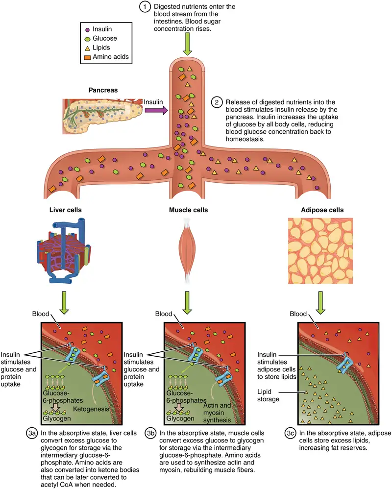
The Postabsorptive State¶
The postabsorptive state, or the fasting state, occurs when the food has been digested, absorbed, and stored. You commonly fast overnight, but skipping meals during the day puts your body in the postabsorptive state as well. During this state, the body must rely initially on stored glycogen. Glucose levels in the blood begin to drop as it is absorbed and used by the cells. In response to the decrease in glucose, insulin levels also drop. Glycogen and triglyceride storage slows. However, due to the demands of the tissues and organs, blood glucose levels must be maintained in the normal range of 80–120 mg/dL. In response to a drop in blood glucose concentration, the hormone glucagon is released from the alpha cells of the pancreas. Glucagon acts upon the liver cells, where it inhibits the synthesis of glycogen and stimulates the breakdown of stored glycogen back into glucose. This glucose is released from the liver to be used by the peripheral tissues and the brain. As a result, blood glucose levels begin to rise. Gluconeogenesis will also begin in the liver to replace the glucose that has been used by the peripheral tissues.
After ingestion of food, fats and proteins are processed as described previously; however, the glucose processing changes a bit. The peripheral tissues preferentially absorb glucose. The liver, which normally absorbs and processes glucose, will not do so after a prolonged fast. The gluconeogenesis that has been ongoing in the liver will continue after fasting to replace the glycogen stores that were depleted in the liver. After these stores have been replenished, excess glucose that is absorbed by the liver will be converted into triglycerides and fatty acids for long-term storage. Figure 24.22 summarizes the metabolic processes occurring in the body during the postabsorptive state.
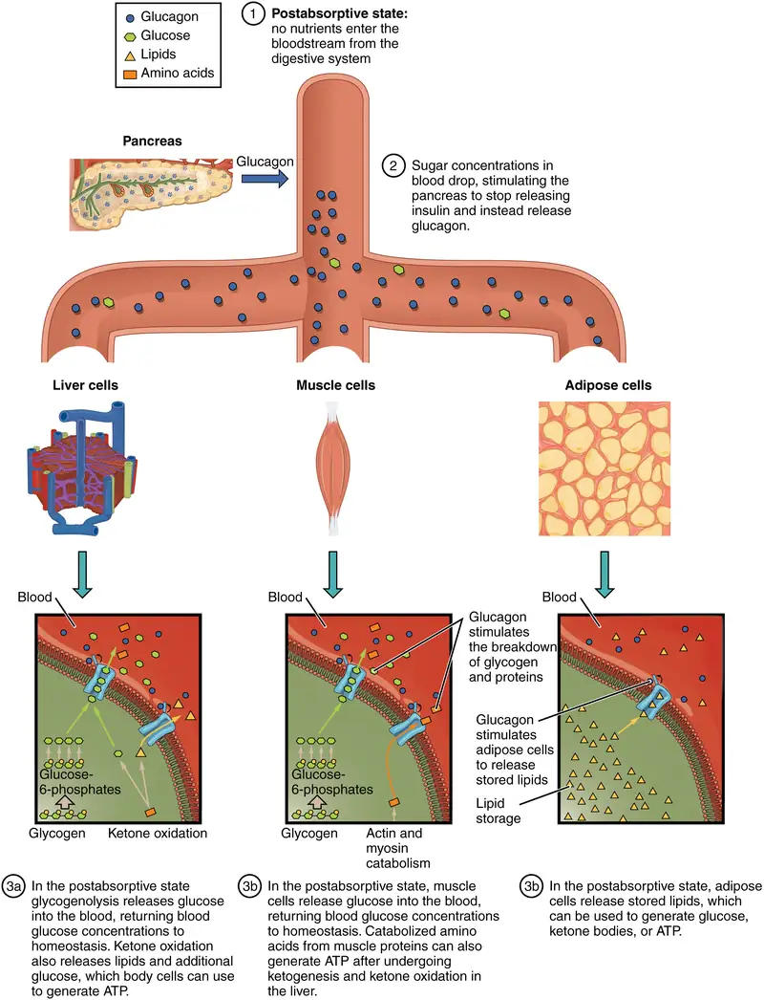
Starvation¶
When the body is deprived of nourishment for an extended period of time, it goes into “survival mode.” The first priority for survival is to provide enough glucose or fuel for the brain. The second priority is the conservation of amino acids for proteins. Therefore, the body uses ketones to satisfy the energy needs of the brain and other glucose-dependent organs, and to maintain proteins in the cells (see Figure 24.2). Because glucose levels are very low during starvation, glycolysis will shut off in cells that can use alternative fuels. For example, muscles will switch from using glucose to fatty acids as fuel. As previously explained, fatty acids can be converted into acetyl CoA and processed through the Krebs cycle to make ATP. Pyruvate, lactate, and alanine from muscle cells are not converted into acetyl CoA and used in the Krebs cycle, but are exported to the liver to be used in the synthesis of glucose. As starvation continues, and more glucose is needed, glycerol from triglycerides can be liberated and used as a source for gluconeogenesis.
After several days of starvation, ketone bodies become the major source of fuel for the heart and other organs. As starvation continues, fatty acids and triglyceride stores are used to create ketones for the body. This prevents the continued breakdown of proteins that serve as carbon sources for gluconeogenesis. Once these stores are fully depleted, proteins from muscles are released and broken down for glucose synthesis. Overall survival is dependent on the amount of fat and protein stored in the body.
24.6 Energy and Heat Balance¶
Learning Objectives
By the end of this section, you will be able to:
- Describe how the body regulates temperature
- Explain the significance of the metabolic rate
The body tightly regulates the body temperature through a process called thermoregulation, in which the body can maintain its temperature within certain boundaries, even when the surrounding temperature is very different. The core temperature of the body remains steady at around 36.5–37.5 °C (or 97.7–99.5 °F). In the process of ATP production by cells throughout the body, approximately 60 percent of the energy produced is in the form of heat used to maintain body temperature. Thermoregulation is an example of negative feedback.
The hypothalamus in the brain is the master switch that works as a thermostat to regulate the body’s core temperature (Figure 24.23). If the temperature is too high, the hypothalamus can initiate several processes to lower it. These include increasing the circulation of the blood to the surface of the body to allow for the dissipation of heat through the skin and initiation of sweating to allow evaporation of water on the skin to cool its surface. Conversely, if the temperature falls below the set core temperature, the hypothalamus can initiate shivering to generate heat. The body uses more energy and generates more heat. In addition, thyroid hormone will stimulate more energy use and heat production by cells throughout the body. An environment is said to be thermoneutral when the body does not expend or release energy to maintain its core temperature. For a naked human, this is an ambient air temperature of around 84 °F. If the temperature is higher, for example, when wearing clothes, the body compensates with cooling mechanisms. The body loses heat through the mechanisms of heat exchange.
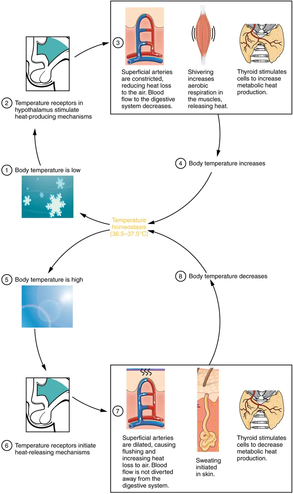
Mechanisms of Heat Exchange¶
When the environment is not thermoneutral, the body uses four mechanisms of heat exchange to maintain homeostasis: conduction, convection, radiation, and evaporation. Each of these mechanisms relies on the property of heat to flow from a higher concentration to a lower concentration; therefore, each of the mechanisms of heat exchange varies in rate according to the temperature and conditions of the environment.
Conduction is the transfer of heat by two objects that are in direct contact with one another. It occurs when the skin comes in contact with a cold or warm object. For example, when holding a glass of ice water, the heat from your skin will warm the glass and in turn melt the ice. Alternatively, on a cold day, you might warm up by wrapping your cold hands around a hot mug of coffee. Only about 3 percent of the body’s heat is lost through conduction.
Convection is the transfer of heat to the air surrounding the skin. The warmed air rises away from the body and is replaced by cooler air that is subsequently heated. Convection can also occur in water. When the water temperature is lower than the body’s temperature, the body loses heat by warming the water closest to the skin, which moves away to be replaced by cooler water. The convection currents created by the temperature changes continue to draw heat away from the body more quickly than the body can replace it, resulting in hypothermia. About 15 percent of the body’s heat is lost through convection.
Radiation is the transfer of heat via infrared waves. This occurs between any two objects when their temperatures differ. A radiator can warm a room via radiant heat. On a sunny day, the radiation from the sun warms the skin. The same principle works from the body to the environment. About 60 percent of the heat lost by the body is lost through radiation.
Evaporation is the transfer of heat by the evaporation of water. Because it takes a great deal of energy for a water molecule to change from a liquid to a gas, evaporating water (in the form of sweat) takes with it a great deal of energy from the skin. However, the rate at which evaporation occurs depends on relative humidity—more sweat evaporates in lower humidity environments. Sweating is the primary means of cooling the body during exercise, whereas at rest, about 20 percent of the heat lost by the body occurs through evaporation.
Metabolic Rate¶
The metabolic rate is the amount of energy consumed minus the amount of energy expended by the body. The basal metabolic rate (BMR) describes the amount of daily energy expended by humans at rest, in a neutrally temperate environment, while in the postabsorptive state. It measures how much energy the body needs for normal, basic, daily activity. About 70 percent of all daily energy expenditure comes from the basic functions of the organs in the body. Another 20 percent comes from physical activity, and the remaining 10 percent is necessary for body thermoregulation or temperature control. This rate will be higher if a person is more active or has more lean body mass. As you age, the BMR generally decreases as the percentage of muscle mass decreases.
24.7 Nutrition and Diet¶
Learning Objectives
By the end of this section, you will be able to:
- Explain how different foods can affect metabolism
- Describe a healthy diet, as recommended by the U.S. Department of Agriculture (USDA)
- List reasons why vitamins and minerals are critical to a healthy diet
The carbohydrates, lipids, and proteins in the foods you eat are used for energy to power molecular, cellular, and organ system activities. Importantly, the energy is stored primarily as fats. The quantity and quality of food that is ingested, digested, and absorbed affects the amount of fat that is stored as excess calories. Diet—both what you eat and how much you eat—has a dramatic impact on your health. Eating too much or too little food can lead to serious medical issues, including cardiovascular disease, cancer, anorexia, and diabetes, among others. Combine an unhealthy diet with unhealthy environmental conditions, such as smoking, and the potential medical complications increase significantly.
Food and Metabolism¶
The amount of energy that is needed or ingested per day is measured in calories. The nutritional Calorie (C) is the amount of heat it takes to raise 1 kg (1000 g) of water by 1 °C. This is different from the calorie (c) used in the physical sciences, which is the amount of heat it takes to raise 1 g of water by 1 °C. When we refer to "calorie," we are referring to the nutritional Calorie.
On average, a person needs 1500 to 2000 calories per day to sustain (or carry out) daily activities. The total number of calories needed by one person is dependent on their body mass, age, height, gender, activity level, and the amount of exercise per day. If exercise is regular part of one’s day, more calories are required. As a rule, people underestimate the number of calories ingested and overestimate the amount they burn through exercise. This can lead to ingestion of too many calories per day. The accumulation of an extra 3500 calories adds one pound of weight. If an excess of 200 calories per day is ingested, one extra pound of body weight will be gained every 18 days. At that rate, an extra 20 pounds can be gained over the course of a year. Of course, this increase in calories could be offset by increased exercise. Running or jogging one mile burns almost 100 calories.
The type of food ingested also affects the body’s metabolic rate. Processing of carbohydrates requires less energy than processing of proteins. In fact, the breakdown of carbohydrates requires the least amount of energy, whereas the processing of proteins demands the most energy. In general, the amount of calories ingested and the amount of calories burned determines the overall weight. To lose weight, the number of calories burned per day must exceed the number ingested. Calories are in almost everything you ingest, so when considering calorie intake, beverages must also be considered.
To help provide guidelines regarding the types and quantities of food that should be eaten every day, the USDA has updated their food guidelines from MyPyramid to MyPlate. They have put the recommended elements of a healthy meal into the context of a place setting of food. MyPlate categorizes food into the standard six food groups: fruits, vegetables, grains, protein foods, dairy, and oils. The accompanying website gives clear recommendations regarding quantity and type of each food that you should consume each day, as well as identifying which foods belong in each category. The accompanying graphic (Figure 24.24) gives a clear visual with general recommendations for a healthy and balanced meal. The guidelines recommend to “Make half your plate fruits and vegetables.” The other half is grains and protein, with a slightly higher quantity of grains than protein. Dairy products are represented by a drink, but the quantity can be applied to other dairy products as well.
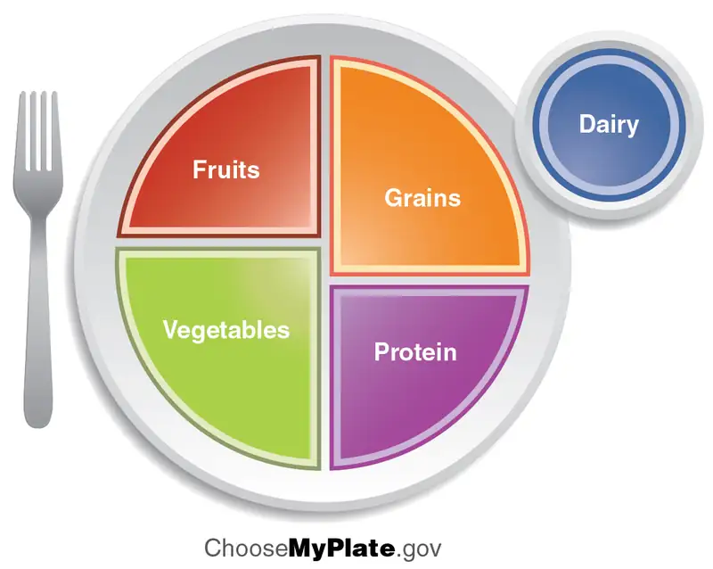
ChooseMyPlate.gov provides extensive online resources for planning a healthy diet and lifestyle, including offering weight management tips and recommendations for physical activity. It also includes the SuperTracker, a web-based application to help you analyze your own diet and physical activity.
Everyday Connection: Metabolism and Obesity
Obesity in the United States is epidemic. The rate of obesity has been steadily rising since the 1980s. In the 1990s, most states reported that less than 10 percent of their populations was obese, and the state with the highest rate reported that only 15 percent of their population was considered obese. By 2010, the U.S. Centers for Disease Control and Prevention reported that nearly 36 percent of adults over 20 years old were obese and an additional 33 percent were overweight, leaving only about 30 percent of the population at a healthy weight. These studies find the highest levels of obesity are concentrated in the southern states. They also find the level of childhood obesity is rising.
Obesity is defined by the body mass index (BMI), which is a measure of a person's weight in kilograms divided by height in meters squared. The normal, or healthy, BMI range is between 18 and 24.9 kg/m2. Overweight is defined as a BMI of 25 to 29.9 kg/m2, and obesity is considered to be a BMI greater than 30 kg/m2. Obesity can arise from a number of factors, including overeating, poor diet, sedentary lifestyle, limited sleep, genetic factors, and even diseases or drugs. Severe obesity (morbid obesity) or long-term obesity can result in serious medical conditions, including coronary heart disease; type 2 diabetes; endometrial, breast, or colon cancer; hypertension (high blood pressure); dyslipidemia (high cholesterol or elevated triglycerides); stroke; liver disease; gall bladder disease; sleep apnea or respiratory diseases; osteoarthritis; and infertility. Research has shown that losing weight can help reduce or reverse the complications associated with these conditions.
Vitamins¶
Vitamins are organic compounds found in foods and are a necessary part of the biochemical reactions in the body. They are involved in a number of processes, including mineral and bone metabolism, and cell and tissue growth, and they act as cofactors for energy metabolism. The B vitamins play the largest role of any vitamins in metabolism (Table 24.3 and Table 24.4).
You get most of your vitamins through your diet, although some can be formed from the precursors absorbed during digestion. For example, the body synthesizes vitamin A from the β-carotene in orange vegetables like carrots and sweet potatoes. Vitamins are either fat-soluble or water-soluble. Fat-soluble vitamins A, D, E, and K, are absorbed through the intestinal tract with lipids in chylomicrons. Vitamin D is also synthesized in the skin through exposure to sunlight. Because they are carried in lipids, fat-soluble vitamins can accumulate in the lipids stored in the body. If excess vitamins are retained in the lipid stores in the body, hypervitaminosis can result.
Water-soluble vitamins, including the eight B vitamins and vitamin C, are absorbed with water in the gastrointestinal tract. These vitamins move easily through bodily fluids, which are water based, so they are not stored in the body. Excess water-soluble vitamins are excreted in the urine. Therefore, hypervitaminosis of water-soluble vitamins rarely occurs, except with an excess of vitamin supplements.
Table 24.3
| Fat-soluble Vitamins | ||||
|---|---|---|---|---|
| Vitamin and alternative name | Sources | Recommended daily allowance | Function | Problems associated with deficiency |
| A retinal or β-carotene |
Yellow and orange fruits and vegetables, dark green leafy vegetables, eggs, milk, liver | 700–900 µg | Eye and bone development, immune function | Night blindness, epithelial changes, immune system deficiency |
| D cholecalciferol |
Dairy products, egg yolks; also synthesized in the skin from exposure to sunlight | 5–15 µg | Aids in calcium absorption, promoting bone growth | Rickets, bone pain, muscle weakness, increased risk of death from cardiovascular disease, cognitive impairment, asthma in children, cancer |
| E tocopherols |
Seeds, nuts, vegetable oils, avocados, wheat germ | 15 mg | Antioxidant | Anemia |
| K phylloquinone |
Dark green leafy vegetables, broccoli, Brussels sprouts, cabbage | 90–120 µg | Blood clotting, bone health | Hemorrhagic disease of newborn in infants; uncommon in adults |
Table 24.4
| Water-soluble Vitamins | ||||
|---|---|---|---|---|
| Vitamin and alternative name | Sources | Recommended daily allowance | Function | Problems associated with deficiency |
| B1 thiamine |
Whole grains, enriched bread and cereals, milk, meat | 1.1–1.2 mg | Carbohydrate metabolism | Beriberi, Wernicke-Korsakoff syndrome |
| B2 riboflavin |
Brewer’s yeast, almonds, milk, organ meats, legumes, enriched breads and cereals, broccoli, asparagus | 1.1–1.3 mg | Synthesis of FAD for metabolism, production of red blood cells | Fatigue, slowed growth, digestive problems, light sensitivity, epithelial problems like cracks in the corners of the mouth |
| B3 niacin |
Meat, fish, poultry, enriched breads and cereals, peanuts | 14–16 mg | Synthesis of NAD, nerve function, cholesterol production | Cracked, scaly skin; dementia; diarrhea; also known as pellagra |
| B5 pantothenic acid |
Meat, poultry, potatoes, oats, enriched breads and cereals, tomatoes | 5 mg | Synthesis of coenzyme A in fatty acid metabolism | Rare: symptoms may include fatigue, insomnia, depression, irritability |
| B6 pyridoxine |
Potatoes, bananas, beans, seeds, nuts, meat, poultry, fish, eggs, dark green leafy vegetables, soy, organ meats | 1.3–1.5 mg | Sodium and potassium balance, red blood cell synthesis, protein metabolism | Confusion, irritability, depression, mouth and tongue sores |
| B7 biotin |
Liver, fruits, meats | 30 µg | Cell growth, metabolism of fatty acids, production of blood cells | Rare in developed countries; symptoms include dermatitis, hair loss, loss of muscular coordination |
| B9 folic acid |
Liver, legumes, dark green leafy vegetables, enriched breads and cereals, citrus fruits | 400 µg | DNA/protein synthesis | Poor growth, gingivitis, appetite loss, shortness of breath, gastrointestinal problems, mental deficits |
| B12 cyanocobalamin |
Fish, meat, poultry, dairy products, eggs | 2.4 µg | Fatty acid oxidation, nerve cell function, red blood cell production | Pernicious anemia, leading to nerve cell damage |
| C ascorbic acid |
Citrus fruits, red berries, peppers, tomatoes, broccoli, dark green leafy vegetables | 75–90 mg | Necessary to produce collagen for formation of connective tissue and teeth, and for wound healing | Dry hair, gingivitis, bleeding gums, dry and scaly skin, slow wound healing, easy bruising, compromised immunity; can lead to scurvy |
Minerals¶
Minerals in food are inorganic compounds that work with other nutrients to ensure the body functions properly. Minerals cannot be made in the body; they come from the diet. The amount of minerals in the body is small—only 4 percent of the total body mass—and most of that consists of the minerals that the body requires in moderate quantities: potassium, sodium, calcium, phosphorus, magnesium, and chloride.
The most common minerals in the body are calcium and phosphorous, both of which are stored in the skeleton and necessary for the hardening of bones. Most minerals are ionized, and their ionic forms are used in physiological processes throughout the body. Sodium and chloride ions are electrolytes in the blood and extracellular tissues, and iron ions are critical to the formation of hemoglobin. There are additional trace minerals that are still important to the body’s functions, but their required quantities are much lower.
Like vitamins, minerals can be consumed in toxic quantities (although it is rare). A healthy diet includes most of the minerals your body requires, so supplements and processed foods can add potentially toxic levels of minerals. Table 24.5 and Table 24.6 provide a summary of minerals and their function in the body.
Table 24.5
| Major Minerals | ||||
|---|---|---|---|---|
| Mineral | Sources | Recommended daily allowance | Function | Problems associated with deficiency |
| Potassium | Meats, some fish, fruits, vegetables, legumes, dairy products | 4700 mg | Nerve and muscle function; acts as an electrolyte | Hypokalemia: weakness, fatigue, muscle cramping, gastrointestinal problems, cardiac problems |
| Sodium | Table salt, milk, beets, celery, processed foods | 2300 mg | Blood pressure, blood volume, muscle and nerve function | Rare |
| Calcium | Dairy products, dark green leafy vegetables, blackstrap molasses, nuts, brewer’s yeast, some fish | 1000 mg | Bone structure and health; nerve and muscle functions, especially cardiac function | Slow growth, weak and brittle bones |
| Phosphorous | Meat, milk | 700 mg | Bone formation, metabolism, ATP production | Rare |
| Magnesium | Whole grains, nuts, leafy green vegetables | 310–420 mg | Enzyme activation, production of energy, regulation of other nutrients | Agitation, anxiety, sleep problems, nausea and vomiting, abnormal heart rhythms, low blood pressure, muscular problems |
| Chloride | Most foods, salt, vegetables, especially seaweed, tomatoes, lettuce, celery, olives | 2300 mg | Balance of body fluids, digestion | Loss of appetite, muscle cramps |
Table 24.6
| Trace Minerals | ||||
|---|---|---|---|---|
| Mineral | Sources | Recommended daily allowance | Function | Problems associated with deficiency |
| Iron | Meat, poultry, fish, shellfish, legumes, nuts, seeds, whole grains, dark leafy green vegetables | 8–18 mg | Transport of oxygen in blood, production of ATP | Anemia, weakness, fatigue |
| Zinc | Meat, fish, poultry, cheese, shellfish | 8–11 mg | Immunity, reproduction, growth, blood clotting, insulin and thyroid function | Loss of appetite, poor growth, weight loss, skin problems, hair loss, vision problems, lack of taste or smell |
| Copper | Seafood, organ meats, nuts, legumes, chocolate, enriched breads and cereals, some fruits and vegetables | 900 µg | Red blood cell production, nerve and immune system function, collagen formation, acts as an antioxidant | Anemia, low body temperature, bone fractures, low white blood cell concentration, irregular heartbeat, thyroid problems |
| Iodine | Fish, shellfish, garlic, lima beans, sesame seeds, soybeans, dark leafy green vegetables | 150 µg | Thyroid function | Hypothyroidism: fatigue, weight gain, dry skin, temperature sensitivity |
| Sulfur | Eggs, meat, poultry, fish, legumes | None | Component of amino acids | Protein deficiency |
| Fluoride | Fluoridated water | 3–4 mg | Maintenance of bone and tooth structure | Increased cavities, weak bones and teeth |
| Manganese | Nuts, seeds, whole grains, legumes | 1.8–2.3 mg | Formation of connective tissue and bones, blood clotting, sex hormone development, metabolism, brain and nerve function | Infertility, bone malformation, weakness, seizures |
| Cobalt | Fish, nuts, leafy green vegetables, whole grains | None | Component of B12 | None |
| Selenium | Brewer’s yeast, wheat germ, liver, butter, fish, shellfish, whole grains | 55 µg | Antioxidant, thyroid function, immune system function | Muscle pain |
| Chromium | Whole grains, lean meats, cheese, black pepper, thyme, brewer’s yeast | 25–35 µg | Insulin function | High blood sugar, triglyceride, and cholesterol levels |
| Molybdenum | Legumes, whole grains, nuts | 45 µg | Cofactor for enzymes | Rare |
Chapter Review¶
Key Terms¶
- absorptive state
- also called the fed state; the metabolic state occurring during the first few hours after ingesting food in which the body is digesting food and absorbing the nutrients
- acetyl coenzyme A (acetyl CoA)
- starting molecule of the Krebs cycle
- anabolic hormones
- hormones that stimulate the synthesis of new, larger molecules
- anabolic reactions
- reactions that build smaller molecules into larger molecules
- ATP synthase
- protein pore complex that creates ATP
- basal metabolic rate (BMR)
- amount of energy expended by the body at rest
- beta (β)-hydroxybutyrate
- primary ketone body produced in the body
- beta (β)-oxidation
- fatty acid oxidation
- bile salts
- salts that are released from the liver in response to lipid ingestion and surround the insoluble triglycerides to aid in their conversion to monoglycerides and free fatty acids
- biosynthesis reactions
- reactions that create new molecules, also called anabolic reactions
- body mass index (BMI)
- relative amount of body weight compared to the overall height; a BMI ranging from 18–24.9 is considered normal weight, 25–29.9 is considered overweight, and greater than 30 is considered obese
- calorie
- amount of heat it takes to raise 1 kg (1000 g) of water by 1 °C
- catabolic hormones
- hormones that stimulate the breakdown of larger molecules
- catabolic reactions
- reactions that break down larger molecules into their constituent parts
- cellular respiration
- production of ATP from glucose oxidation via glycolysis, the Krebs cycle, and oxidative phosphorylation
- cholecystokinin (CCK)
- hormone that stimulates the release of pancreatic lipase and the contraction of the gallbladder to release bile salts
- chylomicrons
- vesicles containing cholesterol and triglycerides that transport lipids out of the intestinal cells and into the lymphatic and circulatory systems
- chymotrypsin
- pancreatic enzyme that digests protein
- chymotrypsinogen
- proenzyme that is activated by trypsin into chymotrypsin
- citric acid cycle
- also called the Krebs cycle or the tricarboxylic acid cycle; converts pyruvate into CO2 and high-energy FADH2, NADH, and ATP molecules
- conduction
- transfer of heat through physical contact
- convection
- transfer of heat between the skin and air or water
- elastase
- pancreatic enzyme that digests protein
- electron transport chain (ETC)
- ATP production pathway in which electrons are passed through a series of oxidation-reduction reactions that forms water and produces a proton gradient
- energy-consuming phase
- first phase of glycolysis, in which two molecules of ATP are necessary to start the reaction
- energy-yielding phase
- second phase of glycolysis, during which energy is produced
- enterokinase
- enzyme located in the wall of the small intestine that activates trypsin
- evaporation
- transfer of heat that occurs when water changes from a liquid to a gas
- FADH2
- high-energy molecule needed for glycolysis
- fatty acid oxidation
- breakdown of fatty acids into smaller chain fatty acids and acetyl CoA
- flavin adenine dinucleotide (FAD)
- coenzyme used to produce FADH2
- glucokinase
- cellular enzyme, found in the liver, which converts glucose into glucose-6-phosphate upon uptake into the cell
- gluconeogenesis
- process of glucose synthesis from pyruvate or other molecules
- glucose-6-phosphate
- phosphorylated glucose produced in the first step of glycolysis
- glycogen
- form that glucose assumes when it is stored
- glycolysis
- series of metabolic reactions that breaks down glucose into pyruvate and produces ATP
- hexokinase
- cellular enzyme, found in most tissues, that converts glucose into glucose-6-phosphate upon uptake into the cell
- hydroxymethylglutaryl CoA (HMG CoA)
- molecule created in the first step of the creation of ketone bodies from acetyl CoA
- inactive proenzymes
- forms in which proteases are stored and released to prevent the inappropriate digestion of the native proteins of the stomach, pancreas, and small intestine
- insulin
- hormone secreted by the pancreas that stimulates the uptake of glucose into the cells
- ketone bodies
- alternative source of energy when glucose is limited, created when too much acetyl CoA is created during fatty acid oxidation
- Krebs cycle
- also called the citric acid cycle or the tricarboxylic acid cycle, converts pyruvate into CO2 and high-energy FADH2, NADH, and ATP molecules
- lipogenesis
- synthesis of lipids that occurs in the liver or adipose tissues
- lipolysis
- breakdown of triglycerides into glycerol and fatty acids
- metabolic rate
- amount of energy consumed minus the amount of energy expended by the body
- metabolism
- sum of all catabolic and anabolic reactions that take place in the body
- minerals
- inorganic compounds required by the body to ensure proper function of the body
- monoglyceride molecules
- lipid consisting of a single fatty acid chain attached to a glycerol backbone
- monosaccharide
- smallest, monomeric sugar molecule
- NADH
- high-energy molecule needed for glycolysis
- nicotinamide adenine dinucleotide (NAD)
- coenzyme used to produce NADH
- oxidation
- loss of an electron
- oxidation-reduction reaction
- (also, redox reaction) pair of reactions in which an electron is passed from one molecule to another, oxidizing one and reducing the other
- oxidative phosphorylation
- process that converts high-energy NADH and FADH2into ATP
- pancreatic lipases
- enzymes released from the pancreas that digest lipids in the diet
- pepsin
- enzyme that begins to break down proteins in the stomach
- polysaccharides
- complex carbohydrates made up of many monosaccharides
- postabsorptive state
- also called the fasting state; the metabolic state occurring after digestion when food is no longer the body’s source of energy and it must rely on stored glycogen
- proteolysis
- process of breaking proteins into smaller peptides
- pyruvate
- three-carbon end product of glycolysis and starting material that is converted into acetyl CoA that enters the Krebs cycle
- radiation
- transfer of heat via infrared waves
- reduction
- gaining of an electron
- salivary amylase
- digestive enzyme that is found in the saliva and begins the digestion of carbohydrates in the mouth
- secretin
- hormone released in the small intestine to aid in digestion
- sodium bicarbonate
- anion released into the small intestine to neutralize the pH of the food from the stomach
- terminal electron acceptor
- oxygen, the recipient of the free hydrogen at the end of the electron transport chain
- thermoneutral
- external temperature at which the body does not expend any energy for thermoregulation, about 84 °F
- thermoregulation
- process of regulating the temperature of the body
- transamination
- transfer of an amine group from one molecule to another as a way to turn nitrogen waste into ammonia so that it can enter the urea cycle
- tricarboxylic acid cycle (TCA)
- also called the Krebs cycle or the citric acid cycle; converts pyruvate into CO2 and high-energy FADH2, NADH, and ATP molecules
- triglycerides
- lipids, or fats, consisting of three fatty acid chains attached to a glycerol backbone
- trypsin
- pancreatic enzyme that activates chymotrypsin and digests protein
- trypsinogen
- proenzyme form of trypsin
- urea cycle
- process that converts potentially toxic nitrogen waste into urea that can be eliminated through the kidneys
- vitamins
- organic compounds required by the body to perform biochemical reactions like metabolism and bone, cell, and tissue growth
Chapter Review¶
24.1 Overview of Metabolic Reactions¶
Metabolism is the sum of all catabolic (break down) and anabolic (synthesis) reactions in the body. The metabolic rate measures the amount of energy used to maintain life. An organism must ingest a sufficient amount of food to maintain its metabolic rate if the organism is to stay alive for very long.
Catabolic reactions break down larger molecules, such as carbohydrates, lipids, and proteins from ingested food, into their constituent smaller parts. They also include the breakdown of ATP, which releases the energy needed for metabolic processes in all cells throughout the body.
Anabolic reactions, or biosynthetic reactions, synthesize larger molecules from smaller constituent parts, using ATP as the energy source for these reactions. Anabolic reactions build bone, muscle mass, and new proteins, fats, and nucleic acids. Oxidation-reduction reactions transfer electrons across molecules by oxidizing one molecule and reducing another, and collecting the released energy to convert Pi and ADP into ATP. Errors in metabolism alter the processing of carbohydrates, lipids, proteins, and nucleic acids, and can result in a number of disease states.
24.2 Carbohydrate Metabolism¶
Metabolic enzymes catalyze catabolic reactions that break down carbohydrates contained in food. The energy released is used to power the cells and systems that make up your body. Excess or unutilized energy is stored as fat or glycogen for later use. Carbohydrate metabolism begins in the mouth, where the enzyme salivary amylase begins to break down complex sugars into monosaccharides. These can then be transported across the intestinal membrane into the bloodstream and then to body tissues. In the cells, glucose, a six-carbon sugar, is processed through a sequence of reactions into smaller sugars, and the energy stored inside the molecule is released. The first step of carbohydrate catabolism is glycolysis, which produces pyruvate, NADH, and ATP. Under anaerobic conditions, the pyruvate can be converted into lactate to keep glycolysis working. Under aerobic conditions, pyruvate enters the Krebs cycle, also called the citric acid cycle or tricarboxylic acid cycle. In addition to ATP, the Krebs cycle produces high-energy FADH2 and NADH molecules, which provide electrons to the oxidative phosphorylation process that generates more high-energy ATP molecules. For each molecule of glucose that is processed in glycolysis, a net of 36 ATPs can be created by aerobic respiration.
Under anaerobic conditions, ATP production is limited to those generated by glycolysis. While a total of four ATPs are produced by glycolysis, two are needed to begin glycolysis, so there is a net yield of two ATP molecules.
In conditions of low glucose, such as fasting, starvation, or low carbohydrate diets, glucose can be synthesized from lactate, pyruvate, glycerol, alanine, or glutamate. This process, called gluconeogenesis, is almost the reverse of glycolysis and serves to create glucose molecules for glucose-dependent organs, such as the brain, when glucose levels fall below normal.
24.3 Lipid Metabolism¶
Lipids are available to the body from three sources. They can be ingested in the diet, stored in the adipose tissue of the body, or synthesized in the liver. Fats ingested in the diet are digested in the small intestine. The triglycerides are broken down into monoglycerides and free fatty acids, then imported across the intestinal mucosa. Once across, the triglycerides are resynthesized and transported to the liver or adipose tissue. Fatty acids are oxidized through fatty acid or β-oxidation into two-carbon acetyl CoA molecules, which can then enter the Krebs cycle to generate ATP. If excess acetyl CoA is created and overloads the capacity of the Krebs cycle, the acetyl CoA can be used to synthesize ketone bodies. When glucose is limited, ketone bodies can be oxidized and used for fuel. Excess acetyl CoA generated from excess glucose or carbohydrate ingestion can be used for fatty acid synthesis or lipogenesis. Acetyl CoA is used to create lipids, triglycerides, steroid hormones, cholesterol, and bile salts. Lipolysis is the breakdown of triglycerides into glycerol and fatty acids, making them easier for the body to process.
24.4 Protein Metabolism¶
Digestion of proteins begins in the stomach, where HCl and pepsin begin the process of breaking down proteins into their constituent amino acids. As the chyme enters the small intestine, it mixes with bicarbonate and digestive enzymes. The bicarbonate neutralizes the acidic HCl, and the digestive enzymes break down the proteins into smaller peptides and amino acids. Digestive hormones secretin and CCK are released from the small intestine to aid in digestive processes, and digestive proenzymes are released from the pancreas (trypsinogen and chymotrypsinogen). Enterokinase, an enzyme located in the wall of the small intestine, activates trypsin, which in turn activates chymotrypsin. These enzymes liberate the individual amino acids that are then transported via sodium-amino acid transporters across the intestinal wall into the cell. The amino acids are then transported into the bloodstream for dispersal to the liver and cells throughout the body to be used to create new proteins. When in excess, the amino acids are processed and stored as glucose or ketones. The nitrogen waste that is liberated in this process is converted to urea in the urea acid cycle and eliminated in the urine. In times of starvation, amino acids can be used as an energy source and processed through the Krebs cycle.
24.5 Metabolic States of the Body¶
There are three main metabolic states of the body: absorptive (fed), postabsorptive (fasting), and starvation. During any given day, your metabolism switches between absorptive and postabsorptive states. Starvation states happen very rarely in generally well-nourished individuals. When the body is fed, glucose, fats, and proteins are absorbed across the intestinal membrane and enter the bloodstream and lymphatic system to be used immediately for fuel. Any excess is stored for later fasting stages. As blood glucose levels rise, the pancreas releases insulin to stimulate the uptake of glucose by hepatocytes in the liver, muscle cells/fibers, and adipocytes (fat cells), and to promote its conversion to glycogen. As the postabsorptive state begins, glucose levels drop, and there is a corresponding drop in insulin levels. Falling glucose levels trigger the pancreas to release glucagon to turn off glycogen synthesis in the liver and stimulate its breakdown into glucose. The glucose is released into the bloodstream to serve as a fuel source for cells throughout the body. If glycogen stores are depleted during fasting, alternative sources, including fatty acids and proteins, can be metabolized and used as fuel. When the body once again enters the absorptive state after fasting, fats and proteins are digested and used to replenish fat and protein stores, whereas glucose is processed and used first to replenish the glycogen stores in the peripheral tissues, then in the liver. If the fast is not broken and starvation begins to set in, during the initial days, glucose produced from gluconeogenesis is still used by the brain and organs. After a few days, however, ketone bodies are created from fats and serve as the preferential fuel source for the heart and other organs, so that the brain can still use glucose. Once these stores are depleted, proteins will be catabolized first from the organs with fast turnover, such as the intestinal lining. Muscle will be spared to prevent the wasting of muscle tissue; however, these proteins will be used if alternative stores are not available.
24.6 Energy and Heat Balance¶
Some of the energy from the food that is ingested is used to maintain the core temperature of the body. Most of the energy derived from the food is released as heat. The core temperature is kept around 36.5–37.5 °C (97.7–99.5 °F). This is tightly regulated by the hypothalamus in the brain, which senses changes in the core temperature and operates like a thermostat to increase sweating or shivering, or inducing other mechanisms to return the temperature to its normal range. The body can also gain or lose heat through mechanisms of heat exchange. Conduction transfers heat from one object to another through physical contact. Convection transfers heat to air or water. Radiation transfers heat via infrared radiation. Evaporation transfers heat as water changes state from a liquid to a gas.
24.7 Nutrition and Diet¶
Nutrition and diet affect your metabolism. More energy is required to break down fats and proteins than carbohydrates; however, all excess calories that are ingested will be stored as fat in the body. On average, a person requires 1500 to 2000 calories for normal daily activity, although routine exercise will increase that amount. If you ingest more than that, the remainder is stored for later use. Conversely, if you ingest less than that, the energy stores in your body will be depleted. Both the quantity and quality of the food you eat affect your metabolism and can affect your overall health. Eating too much or too little can result in serious medical conditions, including cardiovascular disease, cancer, and diabetes.
Vitamins and minerals are essential parts of the diet. They are needed for the proper function of metabolic pathways in the body. Vitamins are not stored in the body, so they must be obtained from the diet or synthesized from precursors available in the diet. Minerals are also obtained from the diet, but they are also stored, primarily in skeletal tissues.
Review Questions¶
24.1 Overview of Metabolic Reactions¶
1. A monosaccharide is formed from a polysaccharide in what kind of reaction?
- oxidation–reduction reaction
- anabolic reaction
- catabolic reaction
- biosynthetic reaction
Answer
C
2. If anabolic reactions exceed catabolic reactions, the result will be ________.
- weight loss
- weight gain
- metabolic rate change
- development of disease
Answer
B
3. When NAD becomes NADH, the coenzyme has been ________.
- reduced
- oxidized
- metabolized
- hydrolyzed
Answer
A
4. Anabolic reactions use energy by ________.
- turning ADP into ATP
- removing a phosphate group from ATP
- producing heat
- breaking down molecules into smaller parts
Answer
B
24.2 Carbohydrate Metabolism¶
5. Glycolysis results in the production of two ________ molecules from a single molecule of glucose. In the absence of ________, the end product of glycolysis is ________.
- acetyl CoA, pyruvate, lactate
- ATP, carbon, pyruvate
- pyruvate, oxygen, lactate
- pyruvate, carbon, acetyl CoA
Answer
C
6. The Krebs cycle converts ________ through a cycle of reactions. In the process, ATP, ________, and ________ are produced.
- acetyl CoA; FAD, NAD
- acetyl CoA; FADH2; NADH
- pyruvate; NAD; FADH2
- pyruvate; oxygen; oxaloacetate
Answer
B
7. Which pathway produces the most ATP molecules?
- lactic acid fermentation
- the Krebs cycle
- the electron transport chain
- glycolysis
Answer
C
8. Aerobic cellular respiration results in the production of these two products.
- NADH and FADH2
- ATP and pyruvate
- ATP and glucose
- ATP and H2O
Answer
D
9. When NAD+ becomes NADH, the coenzyme has been ________.
- reduced
- oxidized
- metabolized
- hydrolyzed
Answer
A
24.3 Lipid Metabolism¶
10. Lipids in the diet can be ________.
- broken down into energy for the body
- stored as triglycerides for later use
- converted into acetyl CoA
- all of the above
Answer
D
11. The gallbladder provides ________ that aid(s) in transport of lipids across the intestinal membrane.
- lipases
- cholesterol
- proteins
- bile salts
Answer
D
12. Triglycerides are transported by chylomicrons because ________.
- they cannot move easily in the blood stream because they are fat based, while the blood is water based
- they are too small to move by themselves
- the chylomicrons contain enzymes they need for anabolism
- they cannot fit across the intestinal membrane
Answer
A
13. Which molecule produces the most ATP?
- carbohydrates
- FADH2
- triglycerides
- NADH
Answer
C
14. Which molecules can enter the Krebs cycle?
- chylomicrons
- acetyl CoA
- monoglycerides
- ketone bodies
Answer
B
15. Acetyl CoA can be converted to all of the following except ________.
- ketone bodies
- fatty acids
- polysaccharides
- triglycerides
Answer
C
24.4 Protein Metabolism¶
16. Digestion of proteins begins in the ________ where ________ and ________ mix with food to break down protein into ________.
- stomach; amylase; HCl; amino acids
- mouth; pepsin; HCl; fatty acids
- stomach; lipase; HCl; amino acids
- stomach; pepsin; HCl; amino acids
Answer
D
17. Amino acids are needed to ________.
- build new proteins
- serve as fat stores
- supply energy for the cell
- create red blood cells
Answer
A
18. If an amino acid is not used to create new proteins, it can be ________.
- converted to acetyl CoA
- converted to glucose or ketones
- converted to nitrogen
- stored to be used later
Answer
B
24.5 Metabolic States of the Body¶
19. During the absorptive state, glucose levels are ________, insulin levels are ________, and glucagon levels ________.
- high; low; stay the same
- low; low; stay the same
- high; high; are high
- high; high; are low
Answer
D
20. Starvation sets in after 3 to 4 days without food. Which hormones change in response to low glucose levels?
- glucagon and insulin
- ketones and glucagon
- insulin, glucose, and glucagon
- insulin and ketones
Answer
A
21. The postabsorptive state relies on stores of ________ in the ________.
- insulin; pancreas
- glucagon; pancreas
- glycogen; liver
- glucose; liver
Answer
C
24.6 Energy and Heat Balance¶
22. The body’s temperature is controlled by the ________. This temperature is always kept between ________.
- pituitary; 36.5–37.5 °C
- hypothalamus; 97.7–99.5 °F
- hypothalamus; 36.5–37.5 °F
- pituitary; 97.7–99.5 °F
Answer
B
23. Fever increases the body temperature and can induce chills to help cool the temperature back down. What other mechanisms are in place to regulate the body temperature?
- shivering
- sweating
- erection of the hairs on the arms and legs
- all of the above
Answer
D
24. The heat you feel on your chair when you stand up was transferred from your skin via ________.
- conduction
- convection
- radiation
- evaporation
Answer
A
25. A crowded room warms up through the mechanism of ________.
- conduction
- convection
- radiation
- evaporation
Answer
C
24.7 Nutrition and Diet¶
26. A deficiency in vitamin A can result in ________.
- improper bone development
- scurvy
- improper eye development or sight
- all of the above
Answer
C
27. Rickets results in improper bone development in children that arises from the malabsorption of calcium and a deficiency in ________.
- vitamin D
- vitamin C
- vitamin B12
- niacin
Answer
A
28. Consuming which type of food will help the most with weight loss?
- fats
- vegetables
- lean meats
- fruits
Answer
C
29. Which of the following is stored in the body?
- thiamine
- phosphorous
- folic acid
- vitamin C
Answer
B
Critical Thinking Questions¶
24.1 Overview of Metabolic Reactions¶
30. Describe how metabolism can be altered.
Answer
An increase or decrease in lean muscle mass will result in an increase or decrease in metabolism.
31. Describe how Addison’s disease can be treated.
Answer
Addison’s disease is characterized by low cortisol levels. One way to treat the disease is by giving cortisol to the patient.
24.2 Carbohydrate Metabolism¶
32. Explain how glucose is metabolized to yield ATP.
Answer
Glucose is oxidized during glycolysis, creating pyruvate, which is processed through the Krebs cycle to produce NADH, FADH2, ATP, and CO2. The FADH2 and NADH yield ATP.
33. Insulin is released when food is ingested and stimulates the uptake of glucose into the cell. Discuss the mechanism cells employ to create a concentration gradient to ensure continual uptake of glucose from the bloodstream.
Answer
Upon entry into the cell, hexokinase or glucokinase phosphorylates glucose, converting it into glucose-6-phosphate. In this form, glucose-6-phosphate is trapped in the cell. Because all of the glucose has been phosphorylated, new glucose molecules can be transported into the cell according to its concentration gradient.
24.3 Lipid Metabolism¶
34. Discuss how carbohydrates can be stored as fat.
Answer
Carbohydrates are converted into pyruvate during glycolysis. This pyruvate is converted into acetyl CoA and proceeds through the Krebs cycle. When excess acetyl CoA is produced that cannot be processed through the Krebs cycle, the acetyl CoA is converted into triglycerides and fatty acids to be stored in the liver and adipose tissue.
35. If a person with diabetes that has breath smells like alcohol, what could this mean?
Answer
If diabetes is uncontrolled, the glucose in the blood is not being taken up and processed by the cells. Although blood glucose levels are high, there is no glucose available to the cells to be converted into energy. Because glucose is lacking, the body turns to other energy sources, including ketones. A side effect of using ketones as fuel is a sweet alcohol smell on the breath.
24.4 Protein Metabolism¶
36. Amino acids are not stored in the body. Describe how excess amino acids are processed in the cell.
Answer
Amino acids are not stored in the body. The individual amino acids are broken down into pyruvate, acetyl CoA, or intermediates of the Krebs cycle, and used for energy or for lipogenesis reactions to be stored as fats.
37. Release of trypsin and chymotrypsin in their active form can result in the digestion of the pancreas or small intestine itself. What mechanism does the body employ to prevent its self-destruction?
Answer
Trypsin and chymotrypsin are released as inactive proenzymes. They are only activated in the small intestine, where they act upon ingested proteins in the food. This helps avoid unintended breakdown of the pancreas or small intestine.
24.5 Metabolic States of the Body¶
38. In type II diabetes, insulin is produced but is nonfunctional. These patients are described as “starving in a sea of plenty,” because their blood glucose levels are high, but none of the glucose is transported into the cells. Describe how this leads to malnutrition.
Answer
Insulin stimulates the uptake of glucose into the cells. In diabetes, the insulin does not function properly; therefore, the blood glucose is unable to be transported across the cell membrane for processing. These patients are unable to process the glucose in their blood and therefore must rely on other sources of fuel. If the disease is not controlled properly, this inability to process the glucose can lead to starvation states even though the patient is eating.
39. Ketone bodies are used as an alternative source of fuel during starvation. Describe how ketones are synthesized.
Answer
When triglycerides and fatty acids are broken down, acetyl CoA is created. If excess acetyl CoA is generated in this process, the excess is used in ketogenesis or the creation of ketones. This creation results from the conversion of acetyl CoA by thiolase into acetoacetyl CoA. This acetoacetyl CoA is subsequently converted into β-hydroxybutyrate, the most common ketone in the body.
24.6 Energy and Heat Balance¶
40. How does vasoconstriction help increase the core temperature of the body?
Answer
When blood flows to the outer layers of the skin or to the extremities, heat is lost to the environment by the mechanisms of conduction, convection, or radiation. This will cool the blood and the body. Vasoconstriction helps increase the core body temperature by preventing the flow of blood to the outer layer of the skin and outer parts of the extremities.
41. How can the ingestion of food increase the body temperature?
Answer
The ingestion of food stimulates digestion and processing of the carbohydrates, proteins, and fats. This breakdown of food triggers glycolysis, the Krebs cycle, the electron transport chain, fatty acid oxidation, lipogenesis, and amino acid oxidation to produce energy. Heat is a byproduct of those reactions.
24.7 Nutrition and Diet¶
42. Weight loss and weight gain are complex processes. What are some of the main factors that influence weight gain in people?
Answer
Factors that influence weight gain are food intake (both quantity and quality), environmental factors, height, exercise level, some drugs or disease states, and genes.
43. Some low-fat or non-fat foods contain a large amount of sugar to replace the fat content of the food. Discuss how this leads to increased fat in the body (and weight gain) even though the item is non-fat.
Answer
Although these foods technically do not have fat added, many times a significant amount of sugar is added to sweeten the food and make it taste better. These foods are non-fat; however, they can lead to significant fat storage or weight gain because the excess sugar is broken down into pyruvate, but overloads the Krebs cycle. When this happens, the sugar is converted into fat through lipogenesis and stored in adipose tissues.
Adapted from Anatomy and Physiology 2e by OpenStax, licensed under CC BY 4.0. Access the original for free at openstax.org. Changes: converted to the web reading format of The Open Book Project.